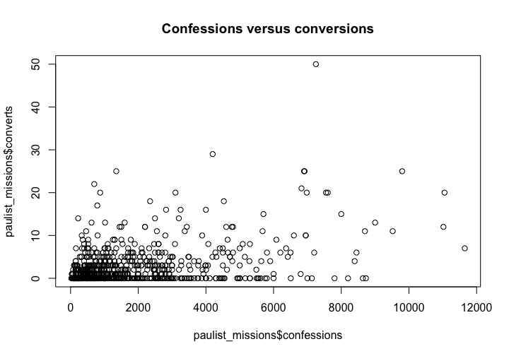

Getting familiar with R
Aim of this worksheet
After completing this worksheet, you should feel comfortable typing commands into the R console (or, REPL) and into an R Markdown document. In particular, you should know how to use values, variables, and functions, how to install and load packages, and how to use the built-in help for R and its packages.
Values
R lets you store several different kinds of values. These values are the information that we actually want to do something with.
One kind of value is a number. Notice that typing this number, either in an R Markdown document or at the console, produces an identical output
42## [1] 42Create a numeric value that has a decimal point:
Of course numbers can be added together (with +), subtracted (with -), multiplied (with *), and divided (with /), along with other arithmetical operations. Let’s add two numbers, which will produce a new number.
2 + 2## [1] 4Add two lines, one that multiplies two numbers, and another that subtracts two numbers.
Another important kind of value is a character vector. (Most other programming languages would call these strings.) These contain text. To create a string, include some characters in between quotation marks "". (Single quotation marks work too, but in general use double-quotation marks as a matter of style.) For instance:
"Hello, beginning R programmer"## [1] "Hello, beginning R programmer"Create a string with a message to your instructor.
Character vectors can’t be added together with +. But they can be joined together with the paste() function.
paste("Hello", "everybody")## [1] "Hello everybody"Mimic the example above and paste three strings together.
Now explain in a sentence what happened.
Another very important kind of value are logical values. There are only two of them: TRUE and FALSE.
# This is true
TRUE## [1] TRUE# This is false
FALSE## [1] FALSENotice that in the block above, the # character starts a comment. That means that from that point on, R will ignore whatever is on that line until a new line begins.
Logical values aren’t very exciting, but they are useful when we compare other values to one another. For instance, we can compare two numbers to one another.
2 < 3## [1] TRUE2 > 3## [1] FALSE2 == 3## [1] FALSEWhat do each of those comparison operators do? (Note the double equal sign: ==.)
Create your own comparisons between numeric values. See if you can create a comparison between character vectors.
R has a special kind of value: the missing value. This is represented by NA.
NA## [1] NATry adding 2 + NA.
Does that answer make sense? Why or why not?
We will come back to missing values.
Variables
We wouldn’t be able to get very far if we only used values. We also need a place to store them, a way of writing them to the computer’s memory. We can do that by assignment to a variable. Assignment has three parts: it has the name of a variable (which cannot contain spaces), an assignment operator, and a value that will be assigned. Most programming languages use a rinky-dink = for assignment, which works in R too. But R is awesome because the assignment operator is <-, a lovely little arrow which tells you that the value goes into the variable. For example:
number <- 42Notice that nothing was printed as output when we did that. But now we can just type a and get the value which is stored in the variable.
number## [1] 42It works with character vectors too.
computer_name <- "HAL 9000"No output, but this works.
computer_name## [1] "HAL 9000"In the assignment above, what is the name of the variable? What is the assignment operator? What is the value assigned to the variable?
Notice that we can use variables any place that we used to use values. For example:
x <- 2
y <- 5
x * y## [1] 10x + 9## [1] 11Explain in your own words what just happened.
Now create two assignments. Assign a number to a variable and a character vector to a different variable.
Now create a third variable with a numeric value and, using the variable with a numeric value from earlier, add them together.
Can you predict what the result of running this code will be? (That is, what value is stored in a?)
a <- 10
b <- 20
a <- b
aPredict your answer, then run the code. What is the value stored in a by the end? Explain why you were right or wrong.
Vectors
Variables are better than just values, but we still need to be able to store multiple values. If we have to store each value in its own variable, then we are going to need a lot of variables. R is a beautiful language because every value is actually a vector. That means it can store more more than one value.
Notice the funny output here:
"Some words"## [1] "Some words"What does the [1] in the output mean? It means that the value has one item inside it. We can test that with the length() function
length("Some words")## [1] 1Sure enough, the length is 1: R is counting the number of items, not the number of words or characters.
That would seem to imply that we can add multiple items (or values) inside a vector. R lets us do that with the c() (for “combine”) function.
many <- c(1, 5, 2, 3, 7)
many## [1] 1 5 2 3 7What is the length of the vector stored in many?
Let’s try multiplying many by 2:
many * 2## [1] 2 10 4 6 14What happened?
What happens when you add 2 to many?
Can you create a variable containing several names as a character vectors?
Hard question: what is happening here? Why does R give you a warning message?
c(1, 2, 3, 4, 5) + c(10, 20)## Warning in c(1, 2, 3, 4, 5) + c(10, 20): longer object length is not a
## multiple of shorter object length## [1] 11 22 13 24 15Built-in functions
Wouldn’t it be nice to be able to do something with data? Let’s take some made up data: the price of books that you or I have bought recently.
book_prices <- c(19.99, 25.78, 5.33, 45.00, 22.45, 21.23)We can find the total amount that I spent using the sum function.
sum(book_prices)## [1] 139.78Try finding the average price of the books (using mean()) and the median price of the books (using median()).
Can you figure out how to find the most expensive book (hint: the book with the maximum price) and the least expensive book (hint: the book with the minimum price)?
Hard question: what is happening here?
book_prices >= mean(book_prices)## [1] FALSE TRUE FALSE TRUE FALSE FALSEUsing the documentation
Let’s try a different set of book prices. This time, we have a vector of book prices, but there are some books for which we don’t know how much we paid. Those are the NA values.
more_books <- c(19.99, NA, 25.78, 5.33, NA, 45.00, 22.45, NA, 21.23)How many books did we buy? (Hint: what is the length of the vector.)
Let’s try finding the total using sum().
sum(more_books)## [1] NAThat wasn’t very helpful. Why did R give us an answer of NA?
We need to find a way to get the value of the books that we know about. This is an option to the sum() function. If you know the name of a function, you can search for it by typing a question mark followed without a space by the name of the function. For example, ?sum. Look up the sum() function’s documentation. Read at least the “Arguments” and the “Examples” section. How can you get the sum for the values which aren’t missing?
Look up the documentation for ?mean, ?max, ?min and see if you can use those functions on a vector with missing values.
Data frames and loading packages
We are historians, and we want to work with complex data. Another reason R is awesome is that it includes a kind of data structure called data frames. Think of a data frame as basically a spreadsheet. It is tabular data, and the columns can contain any kind of data available in R, such as character vectors, numeric vectors, or logical vectors. R has some sample data built in, but let’s use some historical data from the historydata package.
You can load a package like this:
library(historydata)The dplyr package is very helpful. Let’s try loading it for practice. Load the package dplyr.
You might get an error message if you don’t have either package installed. If you need to install it, run install.packages("historydata") at the R console.
We don’t know what is in the historydata package, so let’s look at it’s help. Run this command: help(package = "historydata").
Let’s use the data in the paulist_missions data frame. According to the package documentation, what is in this data frame?
We can print it by using the name of the variable
paulist_missions## mission_number church
## 1 1 St. Joseph's Church
## 2 2 St. Michael's Church
## 3 3 St. Mary's Church
## 4 4 Church of St. John Evangelist
## 5 5 St. Peter's Church
## 6 6 St. Patrick's Cathedral
## 7 7 St. Patrick's Church
## 8 8 St. Philip Benizi Church
## 9 9 St. Vincent's Church (Benedictine)
## 10 10 St. Peter's Church
## 11 11 St. Peter's Church
## 12 12 St. Joseph's Church
## 13 13 Ss. Peter and Paul's Cathedral
## 14 14 St. John's Church
## 15 15 Church of the Assumption
## 16 16 St. Bernard's Church
## 17 17 St. James's Cathedral
## 18 18 St. Peter's Cathedral
## 19 19 Cathedral of the Assumption
## 20 20 Cathedral of the Immaculate Conception
## 21 21 St. Peter's Cathedral
## 22 22 St. John's Cathedral
## 23 23 St. Mary's Church
## 24 24 Cathedral of Baltimore
## 25 25 St. Ignatius' Church
## 26 26 St. Michael's Church
## 27 27 St. Peter's Church
## 28 28 St. Mary's Church
## 29 29 St. Mary's Church
## 30 30 St. Patrick's Church
## 31 31 St. Paul's Church
## 32 32 St. Peter and Paul's Church
## 33 33 St. Patrick's Church
## 34 34 St. Joseph's Church
## 35 35 Cathedral of the Immaculate Conception
## 36 36 St. Alphonsus' Church
## 37 37 St. Peter's Church
## 38 38 St. John Baptist's Church
## 39 39 St. Theresa's Church
## 40 40 St. John's Church
## 41 41
## 42 42 Church of Our Lady of the Mountain
## 43 43 St. Peter's Church
## 44 44 St. Patrick's Cathedral
## 45 45 St. Mary's Church
## 46 46 St. Patrick's Church
## 47 47 Church of the Annunciation
## 48 48
## 49 49
## 50 50
## 51 51 St. Paul's Cathedral
## 52 52 St. Joseph's Cathedral
## 53 53 Church of the Holy Angels
## 54 54 St. John's Cathedral
## 55 55 St. Stephen's Church
## 56 56 Church of Our Lady Start of the Sea
## 57 57 St. Patrick's Church
## 58 58 St. Patrick's Church
## 59 59
## 60 60 Richmond Cathedral
## 61 61
## 62 62 St. Mary's Church
## 63 63 St. Peter's Church
## 64 64 St. Patrick's Church
## 65 65 St. John's Church
## 66 66 Church of the Immaculate Conception
## 67 67 Church of the Assumption of the Blessed Virgin Mary
## 68 68 St. Philip and James' Church
## 69 69 Trinity Church
## 70 70
## 71 71 Cathedral of St. John and St. Finabarr
## 72 72 St. Mary's Church
## 73 73 St. Mary's Church
## 74 74 St. James' Church
## 75 75 Church of Our Lady of Loretto
## 76 76 St. Peter's Church
## 77 77 St. John's Church
## 78 78 St. Joseph's Church
## 79 79 St. John the Baptist's Church
## 80 80 Cathedral of Burlington
## 81 81 St John Baptist's Church
## 82 82
## 83 83
## 84 84
## 85 85
## 86 86
## 87 1 St. Patrick's Church
## 88 2 St. Bridget's Church
## 89 3 Cathedral of Ss. Peter & Paul
## 90 4 St. Peter's Cathedral
## 91 5 St. Mary's Cathedral
## 92 6 St. Augustine's Church
## 93 7 Church of the Immaculate Conception
## 94 8 St. John's Church
## 95 9 St. Thomas's Church
## 96 10 St. Mary's Church
## 97 11 St. Paul's Church
## 98 12 St. Peter's Church
## 99 13 St. Patrick's Church
## 100 14 St. Peter's Church
## 101 15 Cathedral of the Immaculate Conception
## 102 16 St. Mary's Church
## 103 17 St. Mary's Church
## 104 18 St. James' Church
## 105 19 Church of St. Paul the Apostle
## 106 20 St. Mary's Church
## 107 21 Church of the Immaculate Conception
## 108 22 St. John's Church
## 109 23 St. Mary's Church
## 110 24 St. Rose's Church
## 111 25 Church of St. Paul the Apostle
## 112 26 Cathedral
## 113 27 St. Mary's Church
## 114 28 Church of the Immaculate Conception
## 115 29 St. Patrick's Church
## 116 30 St. Soryl's Church
## 117 31 St. James Church
## 118 32 St. John Baptist Church
## 119 33 St. Gregory's Church
## 120 34 Church of the Holy Redeemer
## 121 35 Church of the Immaculate Conception
## 122 36
## 123 37
## 124 38 St. Mary's Church
## 125 39 St. Michael's Church
## 126 40
## 127 41
## 128 42 St. Philomena's Church
## 129 43 St. John's Church
## 130 44 Church of the Immaculate Conception
## 131 45 St. Stephen's Church
## 132 46
## 133 47 St. Peter's Church
## 134 NA St. John's Church
## 135 NA Church of the Immaculate Conception
## 136 NA St. Mary's Cathedral
## 137 NA Nativity Church
## 138 NA Church of St. Rose of Lima
## 139 NA Assumption Church
## 140 NA Cathedral of the Holy Cross
## 141 NA Church of the Most Holy Name of Jesus
## 142 NA St. Joseph's Church
## 143 NA Church of Our Lady of Mercy
## 144 NA Cathedral of the Holy Name
## 145 NA St. Patrick's Cathedral
## 146 NA St. John's Church
## 147 NA St. Theresa's
## 148 NA St. John's Church
## 149 NA Church of the Immaculate Conception
## 150 NA Church of St. John the Baptist
## 151 NA Church of St. Patrick
## 152 NA
## 153 NA Church of St. William
## 154 NA Church of Immaculate Conception
## 155 NA Church of St. Peter
## 156 NA Church of St. Mary
## 157 NA Church of the Assumption
## 158 NA
## 159 NA Church of the Immaculate Conception
## 160 NA Church of St. James
## 161 NA Church of St. Thomas Aquinas
## 162 NA Church of Immaculate Conception
## 163 NA Church of St. Gregory Thaumaturgus
## 164 NA Church of St. Mary
## 165 NA Church of St. John
## 166 NA Church of St. Ann
## 167 NA Church of St. Mary
## 168 NA Church of the Immaculate Conception
## 169 NA Church of St. Patrick
## 170 NA Church of St. Gregory Thaumaturgus
## 171 NA Church of St. Paul
## 172 NA St. Peter's Cathedral
## 173 NA Church of the Sacred Heart
## 174 NA Church of Ss. Peter and Paul
## 175 NA Church of St. John the Evangelist
## 176 NA Church of St. Mary
## 177 NA St. Theresa's Church
## 178 NA Church of St. Mary
## 179 NA St. Peter's Cathedral
## 180 NA Church of St. Paul the Apostle
## 181 NA Cathedral of St. Joseph
## 182 NA Church of the Sacred Heart
## 183 NA Church of the Holy Name
## 184 NA St. Elizabeth's Church
## 185 NA St. Mary's Church
## 186 NA St. Patrick's Church
## 187 NA St. Mary's Church
## 188 NA Church of St. John the Baptist
## 189 NA St. Joseph's Cathedral
## 190 NA St. Malachy's Church
## 191 NA Church of St. Bridget
## 192 NA Church of the Assumption
## 193 NA Church of St. Michael
## 194 NA Church of St. Joseph
## 195 NA Church of the Sacred Heart
## 196 NA St. Joseph's Church
## 197 NA St. Joseph's Church
## 198 NA Church of the Holy Cross
## 199 NA Church of the Nativity
## 200 NA Church of St. Rose of Lima
## 201 NA Church of St. Mary
## 202 NA St. Jarlath's Church
## 203 NA Church of St. Pius
## 204 NA Church of the Annunciation
## 205 NA St. John's Church
## 206 NA St. Mary's Church
## 207 NA St. Mary's Church
## 208 NA St. Mary's Cathedral
## 209 NA St. Mary's Cathedral
## 210 NA St. Francis Church
## 211 NA St. Mary's Church
## 212 NA St. Patrick's Church
## 213 NA Church of St. Rose of Lima
## 214 NA Church of San Rafael
## 215 NA St. Peter's Church
## 216 NA St. Joseph's Church
## 217 NA Church of the Holy Cross
## 218 NA St. Joseph's Cathedral
## 219 NA Church of the Immaculate Conception
## 220 NA Church of the Immaculate Conception
## 221 NA St. Patrick's Church
## 222 NA Church of Mary Magdalen
## 223 NA
## 224 NA Church of St. Michael
## 225 NA Cathedral of St. Paul
## 226 NA St. Mary's Church
## 227 NA Church of the Immaculate Conception
## 228 NA Church of the Immaculate Conception
## 229 NA Church of St. Thomas
## 230 NA St. John's Church
## 231 NA Church of St. Michael
## 232 NA Church of St. Rose of Lima
## 233 NA Church of St. Patrick
## 234 NA Church of St. Michael
## 235 NA Cathedral of St. Paul
## 236 NA St. Augustine's Church
## 237 NA St. Lawrence's Church
## 238 NA St. Patrick's Church
## 239 NA St. Patrick's Church
## 240 NA Church of St. Patrick
## 241 NA St. Thomas's Church
## 242 NA St. Bridget's Church
## 243 NA St. Mary's Church
## 244 NA St. Gerhard's Church
## 245 NA St. Mary's Church
## 246 NA Church of the Sacred Heart
## 247 NA St. Mary's Church
## 248 NA St. Patrick's Church
## 249 NA Church of the Guardian Angels
## 250 NA St. Joseph's Church
## 251 NA St. Mary's Church
## 252 NA Church of St. Felix of Valois
## 253 NA Church of the Immaculate Conception
## 254 NA Church of the Sacred Heart
## 255 NA Church of St. Charles Borromeo
## 256 NA Church of Ss. Peter and Paul
## 257 NA Church of Our Lady, Help of Christians
## 258 NA
## 259 NA Church of the Immaculate Conception
## 260 NA Church of the Holy Family
## 261 NA Church of St. Lucy
## 262 NA Church of the Epiphany
## 263 NA St. Bridget's Church
## 264 NA St. Francis de Sales Church
## 265 NA St John Baptist Church
## 266 NA Church of the Sacred Heart
## 267 NA
## 268 NA St. James Church
## 269 NA St. Pius Church
## 270 NA St. James Church
## 271 NA St. Aloysius Church
## 272 NA St. John's Church
## 273 NA Church of Our Lady of Perpetual Help
## 274 NA St Stephen's Church
## 275 NA Church of St. Charles Borromeo
## 276 NA Church Regina Coeli
## 277 NA Church of St. Mary
## 278 NA Church of St. Mary's
## 279 NA Church of St. Patrick
## 280 NA Church of St. Paul the Apostle
## 281 NA St. Bernard's Church
## 282 NA St. Paul's Church 117th St.
## 283 NA St. Augustine's Church
## 284 NA St Bridget's Church
## 285 NA Church of St. Antony of Padua
## 286 NA St. Mary's Church
## 287 NA
## 288 NA Church of St. Bridget
## 289 NA Church of St. James
## 290 NA
## 291 NA
## 292 NA Church of the Epiphany
## 293 NA Church of Immaculate Conception
## 294 NA Church of St. Patrick
## 295 NA Church of St. Patrick
## 296 NA
## 297 NA
## 298 NA
## 299 NA
## 300 NA
## 301 NA Church of St. Paul of the Cross
## 302 NA
## 303 NA
## 304 NA
## 305 NA St. Pius Church
## 306 NA St. Francis de Sales Church
## 307 NA St. Mary's Church
## 308 NA Church of the Holy Rosary
## 309 NA St. Raphael's Church
## 310 NA All Saint's Church
## 311 NA St. Patrick's Church
## 312 NA St Mary's Church
## 313 NA St. Thomas Aquinas's Church
## 314 NA
## 315 NA St. Leo's Church
## 316 NA Church of the Holy Trinity
## 317 NA
## 318 NA
## 319 NA
## 320 NA
## 321 NA
## 322 NA
## 323 NA Church of St. Paul the Apostle
## 324 NA
## 325 NA
## 326 NA
## 327 NA
## 328 NA St. Mary's Church
## 329 NA
## 330 NA
## 331 NA
## 332 NA
## 333 NA
## 334 NA St. Rose of Lima's Church, Cannon St
## 335 NA St. Jerome's Church, 137th St. and Alexander Avenue
## 336 NA
## 337 NA Corpus Christi Church
## 338 NA St. Mary's Church
## 339 NA
## 340 NA St. Bridget's Church
## 341 NA
## 342 NA
## 343 NA
## 344 NA
## 345 NA
## 346 NA
## 347 NA
## 348 NA St. Patrick's Church
## 349 NA Cathedral
## 350 NA
## 351 NA St. Peter's Church
## 352 NA St. Mark's Church
## 353 NA St. Paul's Church
## 354 NA
## 355 NA
## 356 NA St. John's Cathedral
## 357 NA St. Francis Xavier's Church
## 358 NA St. Joseph's Church
## 359 NA St. Patrick's Church
## 360 NA Church of the Assumption
## 361 NA St. James's Church
## 362 NA Cathedral
## 363 NA St. Patrick's Church
## 364 NA St. Joseph's Church
## 365 NA St. Mary's Church (Regina Coeli)
## 366 NA Church of the Immaculate Conception
## 367 NA Church of the Immaculate Conception
## 368 NA Wheeling Cathedral
## 369 NA St. Pius's Church
## 370 NA St. Peter's Church
## 371 NA St. Mary's Church
## 372 NA St. Patrick's Church
## 373 NA St. Bridget's Church
## 374 NA Church of the Immaculate Conception
## 375 NA Church of St. Charles Borromeo
## 376 NA Church of the Annunciation
## 377 NA
## 378 NA
## 379 NA St. Augustine's Church
## 380 NA St. Patrick's Church
## 381 NA St. Peter's Church
## 382 NA
## 383 NA St. Rose of Lima
## 384 NA St. Francis de Sales
## 385 NA St. John's Cathedral
## 386 NA
## 387 NA St. Rose's Church
## 388 NA St. Mary's Church
## 389 NA St. Thomas's Church
## 390 NA Cathedral
## 391 NA
## 392 NA
## 393 NA
## 394 NA
## 395 NA
## 396 NA St. Joseph's
## 397 NA Cathedral
## 398 NA
## 399 NA
## 400 NA Church of the Immaculate Conception
## 401 NA
## 402 NA
## 403 NA
## 404 NA
## 405 NA
## 406 NA
## 407 NA St. Jerome's Church, 137th St. and Alexander Ave.
## 408 NA St. Teresa's Church
## 409 NA St. John's Church
## 410 NA St. Patrick's Church
## 411 NA St. Leo's Church
## 412 NA
## 413 NA St. Paul the Apostle
## 414 NA Church of the Sacred Heart
## 415 NA St. Bridget's Church
## 416 NA St. Ann's Church
## 417 NA St. Rose of Lima
## 418 NA St. Rose of Lima
## 419 NA
## 420 NA
## 421 NA
## 422 NA St. Marys Church
## 423 NA
## 424 NA St. Paul's Church
## 425 NA Our Lady of Mercy
## 426 NA St. Elizabeth's Church
## 427 NA St. John's Church
## 428 NA
## 429 NA
## 430 NA St. Peter's Church
## 431 NA St. Patrick's Church
## 432 NA St. Patrick's Church
## 433 NA Church of Our Lady of Perpetual Help
## 434 NA St. Patrick's Church
## 435 NA Church of the Sacred Heart
## 436 NA Church of the Holy Angels
## 437 NA Church of St. Peter and Paul
## 438 NA St. Mary's
## 439 NA St. Ignatius' Church
## 440 NA
## 441 NA St. Michael's Church
## 442 NA Church of St. Rose of Lima
## 443 NA St. John's Church
## 444 NA St. Mary's Church
## 445 NA St. James's Church
## 446 NA St. Mary's Church
## 447 NA St. Joseph's Church
## 448 NA Cathedral
## 449 NA St. Patrick's Church
## 450 NA
## 451 NA
## 452 NA
## 453 NA
## 454 NA
## 455 NA
## 456 NA
## 457 NA
## 458 NA
## 459 NA
## 460 NA
## 461 NA
## 462 NA St. Martin's Church
## 463 NA St. Paul's Church
## 464 NA St. Patrick's Church
## 465 NA St. Peter's Church
## 466 NA St. Jerome's Church
## 467 NA St. Columba's Church
## 468 NA
## 469 NA
## 470 NA St. James's Church
## 471 NA St. John's Church
## 472 NA Church of the Immaculate Conception
## 473 NA Manhattan College
## 474 NA Church of St. Paul the Apostle
## 475 NA St. James's Church
## 476 NA St. Thomas's Church
## 477 NA
## 478 NA St. Joseph's Church
## 479 NA St. Augustine's Church
## 480 NA St. Thomas's Church
## 481 NA St. Elizabeth's Church
## 482 NA St. Patrick's Church
## 483 NA All Saints' Church
## 484 NA St. Patrick's Church
## 485 NA St. Bridget's Church
## 486 NA
## 487 NA Church of the Immaculate Conception
## 488 NA
## 489 NA
## 490 NA
## 491 NA St. Peter's Church, Capitol Hill
## 492 NA
## 493 NA
## 494 NA
## 495 NA Cathedral
## 496 NA Church of the Holy Family
## 497 NA St. Patrick's Church
## 498 NA St. Thomas Aquinas's Church
## 499 NA
## 500 NA St. Lucy's Church
## 501 NA St. James's Church
## 502 NA
## 503 NA Church of the Immaculate Conception
## 504 NA Church of the Immaculate Conception
## 505 21 St. Charles College
## 506 22
## 507 23 St. Joseph's Church
## 508 24
## 509 25 Church of St. John the Baptist
## 510 26 St. Bernard's Church
## 511 NA Church of the Annunciation
## 512 NA St. Teresa's Church
## 513 27 St. Mary's Church
## 514 28 St. John's Cathedral
## 515 29 St. Mary's Star of the Sea
## 516 30
## 517 31
## 518 NA
## 519 NA
## 520 NA
## 521 NA Church of the Immaculate Conception
## 522 NA St. Michael's Church
## 523 NA St. Thomas Aquinas's Church
## 524 NA St. Paul's Cathedral
## 525 NA St. Thomas's Church
## 526 NA St. Ann's Church
## 527 NA Church of the Sacred Heart
## 528 NA Church of the Sacred Heart
## 529 NA St. Mary's Church
## 530 NA St. Paul's Church
## 531 NA St. Patrick's Church
## 532 NA St. Augustine's Church
## 533 NA
## 534 NA
## 535 NA
## 536 NA St. Bernard's Church
## 537 NA St. Peter's Church
## 538 NA Church of the Immaculate Conception
## 539 NA St. Anthony of Padua's Church
## 540 NA St. Michael's Church
## 541 NA St. Joseph's Church
## 542 NA
## 543 NA
## 544 NA St. Patrick's Church
## 545 NA St. Mary's Church
## 546 NA St. William's Church
## 547 NA St. Michael's Church
## 548 NA
## 549 NA
## 550 NA St. Teresa's Church
## 551 NA Church of St. John the Evangelist
## 552 NA Church of the Annunciation
## 553 NA
## 554 NA Church of the Sacred Heart
## 555 NA St. Patrick's Church
## 556 NA St. Boniface Church
## 557 NA St. Matthew's Church
## 558 NA St. Augustine's Church
## 559 NA
## 560 NA St. John's Church
## 561 NA
## 562 NA
## 563 NA Church of St. Mary of the Assumption
## 564 NA
## 565 NA St. Michael's Church
## 566 NA Church of the Sacred Heart
## 567 NA St. Augustine's Church
## 568 NA Church of Our Lady of the Sacred Heart
## 569 NA St. Mary's Church
## 570 NA
## 571 NA St. Rose's Church
## 572 NA St. Joseph's Church
## 573 NA
## 574 NA
## 575 NA
## 576 NA
## 577 NA
## 578 NA
## 579 NA St. Mary's Church
## 580 NA
## 581 NA Church of the Transfiguration
## 582 NA
## 583 NA
## 584 NA
## 585 NA St. Stephen's Church
## 586 NA St. Andrew's Church
## 587 NA
## 588 NA St. Mary's Church
## 589 NA St. Patrick's Church
## 590 NA Church of St. Paul the Apostle
## 591 NA
## 592 NA St. Paul's Church
## 593 NA Church of the Sacred Heart
## 594 NA
## 595 NA
## 596 NA Church of St. John the Evangelist
## 597 NA
## 598 NA
## 599 NA St. Bernard's Church
## 600 NA St. Leo's Church
## 601 NA
## 602 NA St. Elizabeth's Church
## 603 NA
## 604 NA
## 605 NA
## 606 NA
## 607 NA
## 608 NA
## 609 NA
## 610 NA St. Bridget's Church
## 611 NA Church of the Holy Apostles
## 612 NA St. Michael's Church
## 613 NA
## 614 NA St. Patrick's Church
## 615 NA St. Thomas's Church
## 616 NA St. Peter's Church
## 617 NA
## 618 NA Church of the Immaculate Conception
## 619 NA St. Mary's Church
## 620 NA St. Joseph's Church
## 621 NA St. Anthony's Church
## 622 NA St. Ignatius's Church
## 623 NA
## 624 NA St. Matthias's Church
## 625 NA St. Joseph's Church
## 626 NA St. John's Church
## 627 NA St. Michael's Church
## 628 NA Church of Our Lady of Perpetual Help
## 629 NA Church of Ss. Peter and Paul
## 630 NA
## 631 NA Church of the Holy Innocents
## 632 NA
## 633 NA St. Agne's Church
## 634 NA Church of the Holy Name
## 635 NA Church of the Holy Cross
## 636 NA Sing Sing Prison
## 637 NA St. Joseph's Church
## 638 NA Church of the Epiphany
## 639 NA St. Teresa's Church
## 640 NA
## 641 NA St. Matthew's Church
## 642 NA St. Patrick's Church
## 643 NA St. Joseph's Church
## 644 NA St. Ann's Church
## 645 NA
## 646 NA
## 647 NA St. Paul's Cathedral
## 648 NA
## 649 NA
## 650 NA
## 651 NA St. John's Church
## 652 NA
## 653 NA
## 654 NA
## 655 NA
## 656 NA St. Rose's Church
## 657 NA St. Peter's Church
## 658 NA
## 659 NA
## 660 NA St. Mary's Church
## 661 NA St. Augustine's Church
## 662 NA St. Bernard's Church
## 663 NA St. John's Church
## 664 NA St. James's Church
## 665 NA Church of the Assumption
## 666 NA Church of St. Lawrence
## 667 NA St. Paul's Church
## 668 NA St. Mary's Church
## 669 NA
## 670 NA St. Mary's Church
## 671 NA St. Patrick's Church
## 672 NA St. Agnes's Church
## 673 NA
## 674 NA Church of the Transfiguration
## 675 NA Church of St. Rose of Lima
## 676 NA St. Mary's Church
## 677 NA St. Patrick's Church
## 678 NA
## 679 NA St. Joseph's Church
## 680 NA Church of the Immaculate Conception
## 681 NA Cathedral of Our Lady of Perpetual Help
## 682 NA St. Gabriel's Church
## 683 NA St. Michael's Church
## 684 NA Cathedral
## 685 NA St. John's Church
## 686 NA St. Cecilia's Church
## 687 NA
## 688 NA St. Patrick's Church
## 689 NA St. John's Church
## 690 NA St. Michael's Church
## 691 NA St. John's Church
## 692 NA St. Vincent de Paul's Church
## 693 NA St. Jarlath's Church
## 694 NA Church of the Blessed Sacrament
## 695 NA
## 696 NA Church of St. Vincent de Paul
## 697 NA St. Patrick's Church
## 698 NA St. Anne's Church
## 699 NA
## 700 NA
## 701 NA
## 702 NA
## 703 NA Ss. Peter and Paul's Cathedral
## 704 NA Church of the Annunciation
## 705 NA Church of the Sacred Heart
## 706 NA St. Joseph's Church
## 707 NA
## 708 NA
## 709 NA St. James's Church
## 710 NA St. Mary's Star of the Sea
## 711 NA
## 712 NA
## 713 NA Church of the Annunciation
## 714 NA St. James's Church
## 715 NA St. Mary's Cathedral
## 716 NA Church of Our Lady of Victory
## 717 NA Church of St. Paul the Apostle
## 718 NA Church of the Sacred Heart
## 719 NA St. Augustine's Church
## 720 NA Church of St. Francis de Sales
## 721 NA St. Matthew's Church
## 722 NA St. Stephen's Church
## 723 NA Church of St. Columbkille
## 724 NA St. Patrick's Church
## 725 NA St. Veronica's Church
## 726 NA Sacred Heart Church
## 727 NA Sacred Heart Church
## 728 NA St. Anne's Church
## 729 NA St. Louis' Church
## 730 NA Church of the Sacred Heart
## 731 NA Immaculate Conception Church
## 732 NA St. Charles' Church
## 733 NA Holy Cross Church
## 734 NA St. Cecilia's Church
## 735 NA St. Michael's Cathedral
## 736 NA St. Leo's Church
## 737 NA St. John's Church
## 738 NA St. Thomas's Church
## 739 NA Sacred Heart Church
## 740 NA Church of the Assumption
## 741 NA St. Michael's Church
## 742 NA Holy Cross Church
## 743 NA
## 744 NA
## 745 NA St. Catherine's Church
## 746 NA
## 747 NA
## 748 NA
## 749 NA
## 750 NA St. Mary's Church
## 751 NA Holy Family Church
## 752 NA St. Mary's Church
## 753 NA St. Patrick's Church
## 754 NA St. Matthew's Church
## 755 NA St. Joseph's Church
## 756 NA St. Peter Claver's Church
## 757 NA Corpus Christi Church
## 758 NA Immaculate Conception Church
## 759 NA St. Francis's Cathedral
## 760 NA St. Colman's Church
## 761 NA St. Cecilia's Church
## 762 NA St. Bridget's Church
## 763 NA St. Thomas's Church
## 764 NA St. Patrick's Church
## 765 NA St. Stephen's Church
## 766 NA St. Jerome's Church
## 767 NA St. Francis de Sales' Church
## 768 NA St. John the Evangelist's Church
## 769 NA St. Jerome's Church
## 770 NA St. Aloysius's Church
## 771 NA St. Patrick's Church
## 772 NA St. John's Church
## 773 NA St. Rose's Church
## 774 NA St. Patrick's Church
## 775 NA Our Lady of Loretto's Church
## 776 NA St. Rose of Lima's Church
## 777 NA St. Francis de Sales' Church
## 778 NA Church of the Assumption
## 779 NA Church of the Immaculate Conception
## 780 NA St. Augustine's Church
## 781 NA St. Bridget's Church
## 782 NA St. Jerome's Church
## 783 NA Church of the Annunciation
## 784 NA
## 785 NA St. Mary's Church
## 786 NA Church of the Immaculate Conception
## 787 NA St. Bridget's Church
## 788 NA Star of the Sea Church
## 789 NA St. Agnes's Church
## 790 NA Holy Trinity Church
## 791 NA St. Columba's Church
## 792 NA Church of Our Lady
## 793 NA St. Joseph's Church
## 794 NA Immaculate Conception Church
## 795 NA
## 796 NA
## 797 NA St. Augustine's Church
## 798 NA
## 799 NA
## 800 NA St. Ann's Church
## 801 NA St. Mark's Church
## 802 NA Church of the Immaculate Conception
## 803 NA Church of the Nativity
## 804 NA St. Mary's Church
## 805 NA Ss. Peter and Paul's Cathedral
## 806 NA St. Mary's Church
## 807 NA St. Simon's Church
## 808 NA St. Joseph's Church
## 809 NA Chapel
## 810 NA St. Ann's Church
## 811 NA Sacred Heart Church
## 812 NA St. Cecilia's Church
## 813 NA St. Stephen's Church
## 814 NA Church of the Immaculate Conception
## 815 NA St. Mary's Church
## 816 NA Church of the Immaculate Conception
## 817 NA
## 818 NA St. Mary's Church
## 819 NA St. Mary's Church
## 820 NA St. Cecilia's Church
## 821 NA St. Gabriel's Church
## 822 NA St. John's Cathedral
## 823 NA Church of the Visitation
## 824 NA Church of the Assumption
## 825 NA St. John's Church
## 826 NA
## 827 NA
## 828 NA St. Patrick's Church
## 829 NA St. Malachy's Church
## 830 NA St. Matthew's Church
## 831 NA Immaculate Conception Church
## 832 NA St. Thomas's Church
## 833 NA Manhattan College
## 834 NA Classon-on-the-Sound
## 835 NA St. Patrick's Church
## 836 NA St. Rose's Church
## 837 NA
## 838 NA
## 839 NA St. Thomas's Church
## 840 NA St. Rose of Lima's Church
## 841 NA
## city state start_date end_date
## 1 New York NY 4/6/1851 4/20/1851
## 2 Loretto PA 4/27/1851 5/11/1851
## 3 Hollidaysburg PA 5/18/1851 5/28/1851
## 4 Johnstown PA 5/31/1851 6/8/1851
## 5 New York NY 9/28/1851 10/12/1851
## 6 New York NY 10/19/1851 11/3/1851
## 7 Erie PA 11/17/1851 11/28/1851
## 8 Cussewago PA 12/1/1851 12/8/1851
## 9 Youngstown PA 12/10/1851 12/19/1851
## 10 Saratoga NY 1/11/1852 1/22/1852
## 11 Troy NY 1/25/1852 2/22/1852
## 12 Albany NY 2/29/1852 3/14/1852
## 13 Detroit MI 3/21/1852 4/4/1852
## 14 Philadelphia PA 5/2/1852 5/16/1852
## 15 Philadelphia PA 5/19/1852 5/31/1852
## 16 Cohoes NY 6/10/1852 6/20/1852
## 17 Wheeling WV 9/5/1852 9/15/1852
## 18 Cincinnati OH 9/26/1852 10/10/1852
## 19 Louisville KY 10/17/1852 10/31/1852
## 20 Albany NY 11/28/1852 12/12/1852
## 21 Richmond VA 12/24/1852 1/3/1853
## 22 Cleveland OH 1/23/1853 2/6/1853
## 23 Philadelphia PA 2/20/1853 3/6/1853
## 24 Baltimore MD 4/10/1853 4/24/1853
## 25 Harford County MD 8/28/1853 9/10/1853
## 26 Flushing NY 9/11/1853 9/18/1853
## 27 New Brighton, Staten Island NY 9/29/1853 10/3/1853
## 28 Yonkers NY 9/29/1853 10/2/1853
## 29 New York NY 10/16/1853 10/30/1853
## 30 Norfolk VA 11/13/1853 11/24/1853
## 31 Portsmouth VA 11/13/1853 11/24/1853
## 32 Williamsburg, Brookyln, New York NY 12/4/1853 12/18/1853
## 33 New Orleans LA 1/15/1854 1/29/1854
## 34 New Orleans LA 2/12/1854 2/21/1854
## 35 Mobile AL 3/4/1854 3/16/1854
## 36 New Orleans LA 3/26/1854 4/5/1854
## 37 New Orleans LA 4/9/1854 4/17/1854
## 38 New Orleans LA 4/23/1854 4/30/1854
## 39 New Orleans LA 5/14/1854 5/21/1854
## 40 Schenectady NY 10/8/1854 10/18/1854
## 41 Patterson NJ 10/29/1854 11/9/1854
## 42 Emmitsburg MD 11/19/1854 11/26/1854
## 43 Baltimore MD 12/3/1854 12/13/1854
## 44 Newark NJ 12/31/1854 1/14/1855
## 45 Charlestown MA 1/28/1855 2/11/1855
## 46 Utica NY 2/21/1855 3/4/1855
## 47 Manhattanville NY 3/18/1855 4/1/1855
## 48 Lexington KY 4/15/1855 4/25/1855
## 49 Frankfort KY 4/29/1855 5/3/1855
## 50 Canandagua NY 9/9/1855 9/17/1855
## 51 Pittsburgh PA 10/14/1855 10/28/1855
## 52 Buffalo NY 11/11/1855 11/21/1855
## 53 Sandusky OH 12/2/1855 12/12/1855
## 54 Cleveland OH 12/16/1855 12/25/1855
## 55 New York NY 1/6/1856 1/18/1856
## 56 Brooklyn NY 2/3/1856 2/17/1856
## 57 Newburgh NY 3/2/1856 3/13/1856
## 58 Norfolk VA 3/30/1856 4/6/1856
## 59 Portsmouth VA 3/30/1856 4/8/1856
## 60 Richmond VA 4/13/1856 4/23/1856
## 61 Petersburg VA 4/13/1856 4/18/1856
## 62 Hoboken NJ 9/28/1856 10/5/1856
## 63 Wilmington DE 10/12/1856 10/23/1856
## 64 Washington DC 11/2/1856 11/15/1856
## 65 Savannah GA 11/23/1856 12/7/1856
## 66 Atlanta GA 12/14/1856 12/19/1856
## 67 Macon GA 12/21/1856 12/28/1856
## 68 Columbus GA 1/4/1857 1/11/1857
## 69 Augusta GA 12/14/1856 12/24/1856
## 70 St. Augustine FL 1/4/1857 1/11/1857
## 71 Charleston SC 1/25/1857 2/8/1857
## 72 Roudout NY 3/1/1857 3/15/1857
## 73 Hudson NY 3/22/1857 3/29/1857
## 74 Newark NJ 9/26/1857 10/6/1857
## 75 Cold Spring NY 10/11/1857 10/18/1857
## 76 Poughkeepsie NY 10/24/1857 11/6/1857
## 77 Utica NY 11/15/1857 11/27/1857
## 78 Brandywine DE 12/6/1857 12/14/1857
## 79 Trenton NJ 12/20/1857 12/31/1857
## 80 Burlington VT 1/10/1858 1/18/1858
## 81 Plattsburg NY 1/24/1858 1/31/1858
## 82 Brandon VT 2/7/1858 2/11/1858
## 83 East Rutland VT 2/7/1858 2/15/1858
## 84 West Rutland VT 2/21/1858 3/1/1858
## 85 Saratoga Springs NY 3/7/1858 3/15/1858
## 86 Little Falls NY 3/21/1858 3/28/1858
## 87 Watertown NY 4/18/1858 4/26/1858
## 88 New York NY 5/2/1858 5/16/1858
## 89 Providence RI 9/19/1858 10/1/1858
## 90 New York NY 10/10/1858 10/17/1858
## 91 Covington KY 10/24/1858 11/1/1858
## 92 Kalamazoo MI 11/7/1858 11/14/1858
## 93 Marshall MI 11/21/1858 11/26/1858
## 94 Jackson MI 11/28/1858 12/5/1858
## 95 Ann Arbor MI 12/12/1858 12/19/1858
## 96 New Haven CT 1/2/1859 1/14/1859
## 97 Princeton NJ 1/23/1859 1/31/1859
## 98 Belleville NJ 2/13/1859 2/20/1859
## 99 Quebec QC 3/20/1859 4/3/1859
## 100 Troy NY 4/10/1859 4/20/1859
## 101 St. John NB 9/4/1859 9/15/1859
## 102 Jersey City NJ 10/2/1859 10/10/1859
## 103 New York NY 10/16/1859 10/23/1859
## 104 Bridgeport CT 10/30/1859 11/7/1859
## 105 New York NY 12/18/1859 12/25/1859
## 106 Clifton, Staten Island NY 1/1/1860 1/8/1860
## 107 Waterbury CT 1/15/1860 1/29/1860
## 108 Middletown CT 2/5/1860 2/14/1860
## 109 New Britain CT 2/19/1860 2/28/1860
## 110 Meriden CT 3/11/1860 3/18/1860
## 111 New York NY 3/25/1860 3/28/1860
## 112 Kingston ON 4/15/1860 4/25/1860
## 113 Norwich CT 5/6/1860 5/16/1860
## 114 Lawrence MA 9/30/1860 10/12/1860
## 115 Elizabethport NJ 10/20/1860 10/28/1860
## 116 Hudson City NJ 11/4/1860 11/12/1860
## 117 New York NY 11/25/1860 12/9/1860
## 118 Boston MA 12/30/1860 1/10/1861
## 119 Haverhill MA 1/20/1861 1/28/1861
## 120 East Boston MA 2/13/1861 2/27/1861
## 121 Newburyport MA 3/3/1861 3/13/1861
## 122 Pittston PA 4/14/1861 4/22/1861
## 123 Holyoke MA 4/28/1861 5/9/1861
## 124 Elizabeth NJ 10/6/1861 10/14/1861
## 125 New York NY 11/17/1861 11/28/1861
## 126 Newport NY 12/29/1861 1/5/1862
## 127 Dunmore PA 1/19/1862 1/26/1862
## 128 Rawley PA 2/2/1862 2/10/1862
## 129 Orange NJ 2/2/1862 2/9/1862
## 130 New York NY 3/2/1862 3/16/1862
## 131 New York NY 3/30/1862 4/6/1862
## 132 Scranton PA 5/18/1862 5/29/1862
## 133 Cambridge MA 4/27/1862 5/7/1862
## 134 Stamford CT 9/28/1862 10/5/1862
## 135 Jersey City NJ 10/12/1862 10/23/1862
## 136 Halifax NS 11/30/1862 12/8/1862
## 137 New York NY 1/4/1863 1/16/1863
## 138 Carbondale PA 1/25/1863 2/3/1863
## 139 Philadelphia PA 2/15/1863 2/26/1863
## 140 Boston MA 3/8/1863 3/17/1863
## 141 Chicopee MA 4/12/1863 4/20/1863
## 142 Pittsfield MA 5/3/1863 5/12/1863
## 143 Port Chester NY 9/13/1863 9/21/1863
## 144 Chicago IL 10/4/1863 10/14/1863
## 145 St. Louis MO 10/25/1863 11/4/1863
## 146 St. Louis MO 11/15/1863 11/24/1863
## 147 New York NY 1/3/1864 1/15/1864
## 148 Honesdale PA 1/24/1864 2/1/1864
## 149 Stoughton MA 2/14/1864 2/21/1864
## 150 Trenton NJ 2/28/1864 3/10/1864
## 151 North Bridgewater MA 4/3/1864 4/10/1864
## 152 Webster MA 4/17/1864 4/24/1864
## 153 Ware MA 5/1/1864 5/8/1864
## 154 Port Jervis NY 9/11/1864 9/21/1864
## 155 Southbridge MA 10/2/1864 10/9/1864
## 156 Lancaster OH 10/23/1864 10/31/1864
## 157 Brookline MA 11/6/1864 11/14/1864
## 158 Brighton MA 11/17/1864 11/17/1864
## 159 Salem MA 12/4/1864 12/13/1864
## 160 Salem MA 1/1/1865 1/11/1865
## 161 Archibald PA 1/29/1865 2/5/1865
## 162 Birmingham CT 2/12/1865 2/20/1865
## 163 Milton MA 3/12/1865 3/19/1865
## 164 Clifton, Staten Island NY 3/26/1865 4/4/1865
## 165 Newark NJ 5/7/1865 5/14/1865
## 166 Manchester NH 9/24/1865 10/5/1865
## 167 Cold Spring NY 10/29/1865 11/5/1865
## 168 Nashua NH 4/30/1871 5/7/1871
## 169 North Bridgewater MA 10/29/1871 11/5/1871
## 170 Milton MA 2/25/1872 3/3/1872
## 171 Wilmington DE 4/28/1872 5/5/1872
## 172 Wilmington DE 10/29/1872 11/5/1872
## 173 Philadelphia PA 11/10/1872 11/18/1872
## 174 Sandusky OH 11/24/1872 12/3/1872
## 175 Birmingham PA 12/8/1872 12/18/1872
## 176 Randolph MA 12/29/1872 1/5/1873
## 177 New York NY 1/12/1873 1/26/1873
## 178 Albany NY 2/2/1873 2/12/1873
## 179 Cincinnati OH 2/23/1873 3/9/1873
## 180 New York NY 3/16/1873 3/30/1873
## 181 Columbus OH 4/20/1873 4/29/1873
## 182 Sharon PA 5/4/1873 5/11/1873
## 183 New York NY 5/18/1873 5/25/1873
## 184 Washington Heights NY 9/21/1873 9/28/1873
## 185 Fall River MA 10/5/1873 10/19/1873
## 186 New London CT 10/26/1873 11/4/1873
## 187 Providence RI 11/2/1873 11/11/1873
## 188 Canton OH 11/16/1873 11/25/1873
## 189 Buffalo NY 11/30/1873 12/14/1873
## 190 Arlington MA 1/4/1874 1/12/1874
## 191 Lexington MA 1/4/1874 1/13/1874
## 192 East Boston MA 1/16/1874 2/1/1874
## 193 Brattleboro VT 2/8/1874 2/15/1874
## 194 Kingston NY 2/22/1874 3/2/1874
## 195 Central Falls NY 3/8/1874 3/16/1874
## 196 Circleville OH 2/8/1874 2/17/1874
## 197 Fond du Lac WI 2/22/1874 3/4/1874
## 198 Ovid NY 3/22/1874 3/29/1874
## 199 New York NY 4/12/1874 4/28/1874
## 200 Suffern NY 5/3/1874 5/8/1874
## 201 Greenwood NY 5/10/1874 5/17/1874
## 202 Chicago IL 9/27/1874 10/7/1874
## 203 Chicago IL 10/11/1874 10/25/1874
## 204 Manhattanville NY 10/4/1874 10/14/1874
## 205 Trenton NJ 10/25/1874 11/5/1874
## 206 New Haven CT 11/8/1874 11/19/1874
## 207 Jersey City NJ 12/6/1874 12/20/1874
## 208 Ogdensburg NY 1/3/1875 1/14/1875
## 209 San Francisco CA 2/14/1875 2/28/1875
## 210 San Francisco CA 3/7/1875 3/16/1875
## 211 Oakland CA 3/7/1875 3/16/1875
## 212 San Francisco CA 3/21/1875 4/5/1875
## 213 Sacramento CA 4/4/1875 4/14/1875
## 214 San Rafael CA 3/21/1875 3/28/1875
## 215 San Francisco CA 4/11/1875 4/21/1875
## 216 San Jose CA 4/18/1875 4/28/1875
## 217 Santa Cruz CA 4/25/1875 5/2/1875
## 218 Marysville CA 5/16/1875 5/24/1875
## 219 Smartsville CA 5/16/1875 5/24/1875
## 220 Virginia City NV 5/30/1875 6/13/1875
## 221 Gold Hill NV 5/30/1875 6/6/1875
## 222 Salt Lake City UT 6/20/1875 6/27/1875
## 223 Ophir City UT 6/20/1875 6/25/1875
## 224 Stillwater MN 9/19/1875 9/30/1875
## 225 St. Paul MN 10/3/1875 10/17/1875
## 226 St. Paul MN 10/24/1875 11/3/1875
## 227 Minneapolis MN 11/7/1875 11/21/1875
## 228 Faribault MN 11/28/1875 12/8/1875
## 229 Winona MN 12/12/1875 12/19/1875
## 230 Baltimore MD 1/9/1876 1/23/1876
## 231 Penn Yan NY 1/30/1876 2/9/1876
## 232 Chelsea MA 2/27/1876 3/12/1876
## 233 Boston MA 3/19/1876 4/9/1876
## 234 Jersey City NJ 4/23/1876 5/7/1876
## 235 St. Paul MN 9/10/1876 9/14/1876
## 236 Austin MN 9/17/1876 9/27/1876
## 237 Fountain MN 10/1/1876 10/6/1876
## 238 Lanesboro MN 10/8/1876 10/18/1876
## 239 Caledonia MN 10/27/1876 10/30/1876
## 240 Brownsville MN 11/4/1876 11/9/1876
## 241 Rochester MN 11/19/1876 11/28/1876
## 242 Rochester MN 11/29/1876 12/3/1876
## 243 Waverly MN 9/17/1876 9/24/1876
## 244 Forest City MN 10/1/1876 10/10/1876
## 245 Shakopee MN 10/15/1876 10/22/1876
## 246 Belle Plaine MN 10/29/1876 11/7/1876
## 247 Le Sueur MN 11/12/1876 11/19/1876
## 248 Shieldsville MN 11/26/1876 12/6/1876
## 249 Hastings MN 9/17/1876 9/26/1876
## 250 Red Wing MN 10/1/1876 10/6/1876
## 251 Lake City and West Albany MN 10/8/1876 10/17/1876
## 252 Wabasha MN 10/22/1876 10/29/1876
## 253 Highland MN 10/29/1876 11/2/1876
## 254 Owatonna MN 11/5/1876 11/12/1876
## 255 St. Charles MN 11/19/1876 11/24/1876
## 256 Hart MN 11/26/1876 11/29/1876
## 257 Sioux City IA 12/3/1876 12/13/1876
## 258 Yankton SD 12/10/1876 12/17/1876
## 259 Ithaca NY 12/31/1876 1/9/1877
## 260 Auburn NY 1/21/1877 2/4/1877
## 261 Syracuse NY 1/21/1877 1/30/1877
## 262 New York NY 2/11/1877 2/25/1877
## 263 New York NY 3/4/1877 3/18/1877
## 264 Charlestown NY 4/8/1877 4/24/1877
## 265 Salina NY 4/29/1877 5/9/1877
## 266 Weymouth MA 4/29/1877 5/9/1877
## 267 Everett MA 5/13/1877 5/20/1877
## 268 Bay City MI 9/16/1877 9/26/1877
## 269 Chicago IL 9/30/1877 10/11/1877
## 270 Chicago IL 10/21/1877 11/7/1877
## 271 Detroit MI 11/18/1877 12/4/1877
## 272 Indianapolis IN 12/9/1877 12/22/1877
## 273 Defiance OH 9/30/1877 10/10/1877
## 274 Flora IL 10/14/1877 10/21/1877
## 275 Charleston IL 10/28/1877 11/4/1877
## 276 Marshall IL 11/4/1877 11/13/1877
## 277 Paris IL 11/18/1877 11/25/1877
## 278 St. Mary's of the Woods IN 11/25/1877 12/4/1877
## 279 Galesburg IL 12/9/1877 12/19/1877
## 280 New York NY 1/6/1878 1/27/1878
## 281 Rockville CT 1/21/1878 1/29/1878
## 282 Harlem NY 2/3/1878 2/17/1878
## 283 South Boston MA 3/3/1878 3/24/1878
## 284 Cleveland OH 3/31/1878 4/10/1878
## 285 White River Junction VT 3/10/1878 3/17/1878
## 286 Bellows Falls VT 3/24/1878 4/1/1878
## 287 Sandy Hill, Hudson Falls NY 4/7/1878 4/16/1878
## 288 North Manchester CT 5/5/1878 5/5/1878
## 289 South Manchester CT 5/5/1878 5/12/1878
## 290 Brockton MA 4/28/1878 5/6/1878
## 291 West Roxbury MA 5/12/1878 5/21/1878
## 292 Monmouth IL 9/29/1878 10/7/1878
## 293 Lacon IL 10/13/1878 10/20/1878
## 294 Camp Grove IL 10/20/1878 10/27/1878
## 295 O'Fallon IL 11/3/1878 11/10/1878
## 296 Morrison IL 11/3/1878 11/10/1878
## 297 IL 11/14/1878 11/17/1878
## 298 Savannah IL 11/14/1878 11/17/1878
## 299 Sabula IL 11/24/1878 11/24/1878
## 300 Lyons IA 11/24/1878 12/1/1878
## 301 Jersey City NY 9/22/1878 10/2/1878
## 302 Garder MA 10/6/1878 10/10/1878
## 303 Winchendon MA 10/13/1878 10/21/1878
## 304 Shullsburg WI 10/27/1878 11/6/1878
## 305 Chicago IL 11/10/1878 11/17/1878
## 306 Toledo OH 11/24/1878 12/4/1878
## 307 Albany NY 12/8/1878 12/22/1878
## 308 Newburgh OH 1/5/1879 1/20/1879
## 309 Madison WI 1/26/1879 2/5/1879
## 310 Chicago IL 2/9/1879 2/23/1879
## 311 Providence RI 3/2/1879 3/16/1879
## 312 New London CT 3/23/1879 4/2/1879
## 313 Bridgewater CT 4/20/1879 4/29/1879
## 314 West Roxbury MA 5/4/1879 5/12/1879
## 315 Leominster MA 5/18/1879 5/25/1879
## 316 Greenfield MA 9/14/1879 9/21/1879
## 317 South Deerfield MA 9/14/1879 9/21/1879
## 318 Shelbourne Falls MA 9/14/1879 9/21/1879
## 319 Chicopee Falls MA 9/25/1879 10/6/1879
## 320 Johnstown PA 10/12/1879 10/26/1879
## 321 Ypsilanti MI 11/2/1879 11/9/1879
## 322 Ann Arbor MI 11/16/1879 11/24/1879
## 323 New York NY 11/30/1879 12/18/1879
## 324 Deposit NY 11/9/1879 11/16/1879
## 325 Harper's Ferry WV 1/4/1880 1/11/1880
## 326 Winchester VA 1/11/1880 1/20/1880
## 327 Martinsburg WV 1/25/1880 2/2/1880
## 328 Little Falls NY 1/4/1880 1/14/1880
## 329 Marine City MI 1/25/1880 2/1/1880
## 330 Algonac MI 1/25/1880 1/27/1880
## 331 Northfield MI 2/8/1880 2/15/1880
## 332 Evansville IN 2/22/1880 3/2/1880
## 333 Terre Haute IN 3/7/1880 3/18/1880
## 334 Cannon St. NY 4/4/1880 4/19/1880
## 335 New York NY 4/25/1880 5/9/1880
## 336 Chambersburg PA 9/12/1880 9/18/1880
## 337 Chambersburg PA 9/19/1880 9/27/1880
## 338 Hagerstown MD 10/15/1880 10/15/1880
## 339 Carlisle PA 10/17/1880 10/25/1880
## 340 Rochester NY 9/12/1880 9/21/1880
## 341 Seneca Falls NY 10/1/1880 10/1/1880
## 342 Susquehanna PA 11/14/1880 11/23/1880
## 343 Mamaroneck NY 12/5/1880 12/12/1880
## 344 Staunton VA 10/10/1880 10/17/1880
## 345 Lexington VA 10/24/1880 10/28/1880
## 346 Fredricksburg VA 10/31/1880 11/4/1880
## 347 Petersburg VA 11/7/1880 11/14/1880
## 348 Richmond VA 11/21/1880 11/28/1880
## 349 Richmond VA 11/28/1880 12/12/1880
## 350 Bergon Point NJ 1/16/1881 1/27/1881
## 351 Hartford CT 1/16/1881 1/30/1881
## 352 Kenastia WI 3/6/1881 3/15/1881
## 353 Kenastia WI 3/20/1881 3/26/1881
## 354 Marine City MI 3/6/1881 3/15/1881
## 355 Delavan WI 3/20/1881 3/29/1881
## 356 Milwaukee WI 3/30/1881 4/3/1881
## 357 Baltimore MD 4/17/1881 5/1/1881
## 358 Circleville OH 2/6/1881 2/13/1881
## 359 Racine WI 3/21/1881 3/29/1881
## 360 Evansville IN 2/20/1881 2/27/1881
## 361 Salem MA 5/8/1881 5/23/1881
## 362 Albany NY 3/29/1881 4/3/1881
## 363 Brockton MA 9/18/1881 9/25/1881
## 364 New York NY 10/1/1881 10/8/1881
## 365 Marshall IL 9/18/1881 9/25/1881
## 366 Paris IL 9/25/1881 10/2/1881
## 367 South Wheeling WV 9/18/1881 9/25/1881
## 368 Wheeling WV 10/2/1881 10/16/1881
## 369 Chicago IL 10/23/1881 11/7/1881
## 370 Oshkosh WI 10/23/1881 10/30/1881
## 371 Appleton WI 10/30/1881 11/6/1881
## 372 Chicago IL 11/13/1881 11/21/1881
## 373 Stanton WI 12/4/1881 12/11/1881
## 374 New Richmond WI 12/18/1881 12/25/1881
## 375 Charleston IL 12/2/1881 12/9/1881
## 376 Brazil IN 12/4/1881 12/11/1881
## 377 Carbon IN 12/11/1881 12/16/1881
## 378 Evansville IN 12/1/1881 12/1/1881
## 379 Boston MA 12/1/1881 12/1/1881
## 380 Lowell MA 1/1/1882 1/7/1882
## 381 Hartford CT 1/8/1882 1/22/1882
## 382 New Lebanon NY 1/8/1882 1/15/1882
## 383 New York NY 2/5/1882 2/19/1882
## 384 Boston MA 2/26/1882 3/10/1882
## 385 Milwaukee WI 3/19/1882 4/2/1882
## 386 Kenastia WI 4/5/1882 4/9/1882
## 387 Chelsea MA 4/16/1882 4/30/1882
## 388 Everett MA 5/7/1882 5/14/1882
## 389 West Farms NY 4/2/1882 4/9/1882
## 390 Albany NY 5/7/1882 5/14/1882
## 391 Waterville NY 5/15/1882 5/15/1882
## 392 Oriskany Falls NY 5/15/1882 5/15/1882
## 393 Hamilton NY 11/1/1881 11/1/1881
## 394 Sherburne NY 11/1/1881 11/1/1881
## 395 Sing-Sing NY 5/7/1882 5/14/1882
## 396 New York NY 11/6/1881 11/20/1881
## 397 Denver CO 12/4/1881 12/14/1881
## 398 Boulder CO 12/18/1881 12/22/1881
## 399 St. Vrain Valley CO 1/8/1882 1/12/1882
## 400 Leadville CO 1/15/1882 1/29/1882
## 401 Idaho Springs CO 2/19/1882 2/26/1882
## 402 South Boulder and Fort Collins CO 3/19/1882 4/2/1882
## 403 Mount Robinson CO 4/16/1882 4/24/1882
## 404 Durango CO 4/30/1882 5/7/1882
## 405 Gunnison CO 5/8/1882 5/8/1882
## 406 Franklin PA 9/17/1882 9/24/1882
## 407 New York NY 10/1/1882 10/16/1882
## 408 Brooklyn NY 10/22/1882 11/5/1882
## 409 Bellaire OH 11/12/1882 11/27/1882
## 410 Brockton MA 11/26/1882 12/10/1882
## 411 Irvington NJ 12/17/1882 12/22/1882
## 412 Milford MA 12/31/1882 1/10/1883
## 413 New York NY 12/31/1882 1/28/1883
## 414 East Cambridge MA 2/4/1883 2/4/1883
## 415 New York NY 3/4/1883 3/25/1883
## 416 Baltimore MD 4/15/1883 4/22/1883
## 417 New York NY 4/15/1883 4/22/1883
## 418 Chelsea MA 4/22/1883 4/29/1883
## 419 Rockland MA 5/6/1883 5/13/1883
## 420 Abington MA 5/13/1883 5/20/1883
## 421 Suffern NY 5/13/1883 5/21/1883
## 422 Houlton ME 5/27/1883 6/3/1883
## 423 Fort Fairfield ME 6/5/1883 6/10/1883
## 424 Kensington CT 5/6/1883 5/13/1883
## 425 Plainville CT 5/13/1883 5/20/1883
## 426 Fort Washington NY 9/16/1883 9/23/1883
## 427 Kings Bridge NY 9/16/1883 9/23/1883
## 428 Plymouth MA 9/16/1883 9/23/1883
## 429 Kingston MA 9/16/1883 9/19/1883
## 430 Poughkeepsie NY 9/30/1883 10/7/1883
## 431 Audenried PA 9/30/1883 10/7/1883
## 432 Beaver Meadows PA 9/30/1883 10/7/1883
## 433 Defiance OH 10/14/1883 10/31/1883
## 434 Brooklyn NY 10/7/1883 10/14/1883
## 435 Brooklyn NY 10/21/1883 10/28/1883
## 436 Chicago IL 10/14/1883 10/21/1883
## 437 Sandusky OH 10/28/1883 11/5/1883
## 438 Harford Co. MD 10/28/1883 11/4/1883
## 439 Hickory MD 11/4/1883 11/13/1883
## 440 Port Deposit MD 11/18/1883 11/25/1883
## 441 Jersey City NJ 11/11/1883 12/2/1883
## 442 New York NY 12/9/1883 12/23/1883
## 443 Worcester MA 1/6/1884 1/13/1884
## 444 Joliet IL 1/20/1884 2/3/1884
## 445 Chicago IL 2/10/1884 2/24/1884
## 446 New Britain CT 3/2/1884 3/16/1884
## 447 Brooklyn NY 3/23/1884 4/6/1884
## 448 Richmond VA 12/9/1883 12/16/1883
## 449 Richmond VA 12/9/1883 12/16/1883
## 450 Norfolk VA 12/30/1883 1/6/1884
## 451 Portsmouth VA 1/6/1884 1/13/1884
## 452 Old Point Comfort VA 1/15/1884 1/17/1884
## 453 Petersburg VA 1/20/1884 1/27/1884
## 454 Lynchburg VA 1/27/1884 2/3/1884
## 455 Staunton VA 2/10/1884 2/17/1884
## 456 Harrisonburg VA 2/10/1884 2/17/1884
## 457 Martinsburg WV 2/17/1884 2/24/1884
## 458 Winchester VA 3/2/1884 3/9/1884
## 459 Keyset WV 3/11/1884 3/16/1884
## 460 Harper's Ferry WV 3/19/1884 3/23/1884
## 461 Havre de Grace MD 3/30/1884 4/6/1884
## 462 Baltimore MD 4/20/1884 5/4/1884
## 463 New York NY 4/27/1884 5/4/1884
## 464 Lowell MA 5/5/1884 5/5/1884
## 465 Poughkeepsie NY 9/14/1884 9/21/1884
## 466 New York NY 9/28/1884 10/5/1884
## 467 Ottowa IL 10/14/1884 10/21/1884
## 468 Seneca IL 10/21/1884 10/21/1884
## 469 Marseilles IL 10/21/1884 10/21/1884
## 470 New York NY 11/9/1884 12/11/1884
## 471 Utica NY 12/14/1884 12/21/1884
## 472 New York NY 1/11/1885 1/19/1885
## 473 New York NY 1/27/1885 1/29/1885
## 474 New York NY 2/1/1885 2/15/1885
## 475 Salem MA 2/22/1885 3/8/1885
## 476 Mamaroneck NY 3/8/1885 3/15/1885
## 477 Waukesha WI 3/7/1885 3/15/1885
## 478 Terre Haute IN 3/22/1885 3/29/1885
## 479 Morrissania NY 4/12/1885 4/19/1885
## 480 West Farms NY 4/12/1885 4/19/1885
## 481 Chicago IL 4/12/1885 4/21/1885
## 482 Newburgh NY 4/26/1885 5/10/1885
## 483 Chicago IL 4/26/1885 5/10/1885
## 484 Brooklyn NY 5/17/1885 5/31/1885
## 485 Abington MA 6/3/1885 6/8/1885
## 486 Perth Amboy NJ 9/13/1885 9/20/1885
## 487 Yonkers NY 9/13/1885 9/27/1885
## 488 Currie MN 9/27/1885 10/4/1885
## 489 Tracy MN 10/4/1885 10/9/1885
## 490 Willow Lake MN 10/4/1885 10/7/1885
## 491 Washington DC 10/4/1885 10/14/1885
## 492 Fulda MN 10/11/1885 10/18/1885
## 493 Woodstock MN 10/16/1885 10/21/1885
## 494 Pipestone MN 10/24/1885 10/24/1885
## 495 Baltimore MD 10/18/1885 11/1/1885
## 496 Auburn NY 11/8/1885 11/22/1885
## 497 Pittsburgh PA 11/8/1885 11/22/1885
## 498 Jamaica Plain MA 11/29/1885 12/13/1885
## 499 Terre Haute IN 11/28/1885 12/2/1885
## 500 Syracuse NY 12/13/1885 12/21/1885
## 501 New York NY 1/3/1886 1/17/1886
## 502 Union Springs NY 1/10/1886 1/17/1886
## 503 New York NY 1/24/1886 2/21/1886
## 504 Washington DC 2/28/1886 3/9/1886
## 505 Ellicot City MD 2/23/1886 2/28/1886
## 506 Phelps NY 3/7/1886 3/15/1886
## 507 New York NY 3/14/1886 3/28/1886
## 508 Mobile AL 2/28/1886 3/8/1886
## 509 New Orleans LA 3/1/1886 3/1/1886
## 510 New York NY 4/4/1886 4/18/1886
## 511 Manhattanville NY 4/4/1886 4/11/1886
## 512 New York NY 4/11/1886 4/18/1886
## 513 Canandaigua NY 5/9/1886 5/17/1886
## 514 Milwaukee WI 5/2/1886 5/16/1886
## 515 Long Branch NY 5/23/1886 5/30/1886
## 516 Kenoska WI 5/23/1886 5/30/1886
## 517 Goshen NY 5/30/1886 6/6/1886
## 518 Morristown NJ 5/1/1886 5/1/1886
## 519 West Point NY 9/12/1886 9/19/1886
## 520 Highland Falls NY 9/19/1886 9/26/1886
## 521 Minneapolis MN 9/19/1886 9/27/1886
## 522 West St. Paul MN 9/26/1886 10/4/1886
## 523 Jamaica Plain MA 10/3/1886 10/17/1886
## 524 St. Paul MN 10/3/1886 10/17/1886
## 525 Winona MN 10/24/1886 10/31/1886
## 526 Baltimore MD 10/24/1886 10/31/1886
## 527 Waseca MN 10/24/1886 10/31/1886
## 528 Owatonna MN 10/31/1886 11/7/1886
## 529 St. Paul MN 11/7/1886 11/16/1886
## 530 Birmingham AL 11/7/1886 11/17/1886
## 531 Shieldsville MN 11/21/1886 11/28/1886
## 532 Austin MN 11/21/1886 11/28/1886
## 533 Oyster Bay, Long Island NY 10/24/1886 10/28/1886
## 534 Huntington, Long Island NY 11/7/1886 11/14/1886
## 535 Aurora NY 11/21/1886 11/28/1886
## 536 New York NY 12/5/1886 12/12/1886
## 537 Montgomery AL 11/21/1886 11/30/1886
## 538 Faribault MN 11/28/1886 12/5/1886
## 539 East Minneapolis MN 12/5/1886 12/13/1886
## 540 Pensacola FL 12/5/1886 12/17/1886
## 541 St. Paul MN 12/19/1886 12/26/1886
## 542 Farmington MN 12/19/1886 12/22/1886
## 543 Boston MA 1/9/1887 1/19/1887
## 544 Pittsburgh PA 1/9/1887 1/23/1887
## 545 Honeoye NY 1/30/1887 2/13/1887
## 546 Conesus NY 1/30/1887 2/13/1887
## 547 Livonia NY 1/30/1887 2/13/1887
## 548 Honeoye Falls NY 1/30/1887 2/13/1887
## 549 East Rush NY 1/30/1887 2/13/1887
## 550 New York NY 2/13/1887 3/13/1887
## 551 New York NY 3/12/1887 4/3/1887
## 552 New York NY 3/20/1887 4/3/1887
## 553 Seneca Falls NY 3/29/1887 4/3/1887
## 554 West Fitchburg MA 4/17/1887 4/24/1887
## 555 Weston WV 4/17/1887 4/24/1887
## 556 Leading Creek WV 4/25/1887 4/25/1887
## 557 Shullsburg WI 5/1/1887 5/8/1887
## 558 Brooklyn NY 4/17/1887 5/8/1887
## 559 Wyandotte MI 5/8/1887 5/15/1887
## 560 Dayton's Bluff, St. Paul MN 5/15/1887 5/22/1887
## 561 Luverne MN 5/22/1887 5/29/1887
## 562 Ellsworth MN 5/29/1887 5/29/1887
## 563 Port Richmond, Staten Island NY 5/22/1887 5/29/1887
## 564 Seabright NJ 5/29/1887 6/6/1887
## 565 Stillwater MN 6/5/1887 6/18/1887
## 566 Bridgeport CT 9/11/1887 9/20/1887
## 567 Union Hill NJ 9/1/1887 9/1/1887
## 568 Chelsea MI 9/18/1887 9/25/1887
## 569 Pinckney MI 9/20/1887 10/2/1887
## 570 Bethel CT 9/25/1887 10/2/1887
## 571 Lima NY 10/2/1887 10/9/1887
## 572 West Bloomfield NY 10/8/1887 10/12/1887
## 573 Lenox MA 10/9/1887 10/23/1887
## 574 Lee MA 10/9/1887 10/23/1887
## 575 South Lee MA 10/9/1887 10/23/1887
## 576 Ithaca NY 10/9/1887 10/23/1887
## 577 Cayuga NY 10/24/1887 10/28/1887
## 578 Avon NY 10/30/1887 11/6/1887
## 579 Westfield MA 10/30/1887 11/6/1887
## 580 Penn Yan NY 11/13/1887 11/20/1887
## 581 New York NY 11/13/1887 11/20/1887
## 582 Greenport NY 10/23/1887 10/30/1887
## 583 Glen Cove NY 11/6/1887 11/13/1887
## 584 Sag Harbor NY 11/27/1887 12/4/1887
## 585 Pittsburgh PA 11/27/1887 12/11/1887
## 586 New York NY 12/4/1887 12/20/1887
## 587 Far Rockaway NY 1/15/1888 1/22/1888
## 588 Norfolk VA 1/8/1888 1/19/1888
## 589 Lockport NY 1/22/1888 1/29/1888
## 590 New York NY 1/29/1888 2/12/1888
## 591 Macedon NY 2/5/1888 2/13/1888
## 592 Harlem NY 2/19/1888 3/4/1888
## 593 Worcester MA 2/19/1888 3/4/1888
## 594 Lyons NY 3/11/1888 3/19/1888
## 595 Newark NY 3/11/1888 3/19/1888
## 596 New York NY 3/11/1888 3/25/1888
## 597 Morrisania NY 4/8/1888 4/15/1888
## 598 West Farms NY 4/8/1888 4/15/1888
## 599 Fitchburg MA 4/8/1888 4/22/1888
## 600 Leominster MA 4/8/1888 4/15/1888
## 601 Newburyport MA 4/22/1888 5/7/1888
## 602 Chicago IL 4/22/1888 5/6/1888
## 603 Morristown NJ 5/13/1888 5/28/1888
## 604 West Stockbridge MA 5/14/1888 5/20/1888
## 605 Stockbridge MA 5/20/1888 5/27/1888
## 606 Galesburg IL 5/14/1888 5/20/1888
## 607 Wyandotte MI 5/22/1888 5/28/1888
## 608 Suffern NJ 6/3/1888 6/10/1888
## 609 Tuxedo Park NJ 6/10/1888 6/16/1888
## 610 Rochester NY 9/9/1888 9/17/1888
## 611 Rochester NY 9/16/1888 9/23/1888
## 612 Frostburg MD 9/16/1888 9/23/1888
## 613 Westport CT 9/16/1888 9/24/1888
## 614 Mt. Savage MD 9/23/1888 9/30/1888
## 615 Mooresville MD 10/4/1888 10/10/1888
## 616 Hancock MD 9/30/1888 10/6/1888
## 617 Little Orleans MD 10/7/1888 10/10/1888
## 618 Brooklyn NY 9/30/1888 10/14/1888
## 619 Davenport IA 10/7/1888 10/14/1888
## 620 Rock Island IL 10/14/1888 10/21/1888
## 621 Davenport IA 10/21/1888 10/29/1888
## 622 Hickory IN 10/21/1888 10/28/1888
## 623 Bergen Point NJ 10/21/1888 11/4/1888
## 624 Muscatine IA 11/4/1888 11/12/1888
## 625 Weedsport NY 11/11/1888 11/18/1888
## 626 Port Byron NY 11/18/1888 11/21/1888
## 627 Montezuma NY 11/22/1888 11/25/1888
## 628 Defiance OH 11/18/1888 11/26/1888
## 629 Brooklyn NY 11/11/1888 11/25/1888
## 630 Rye NY 12/2/1888 12/9/1888
## 631 New York NY 12/9/1888 12/23/1888
## 632 Far Rockaway NY 12/30/1888 1/1/1889
## 633 New York NY 1/6/1889 1/20/1889
## 634 Newburgh OH 1/6/1889 1/20/1889
## 635 Marine City MI 1/27/1889 2/3/1889
## 636 Ossining NY 1/27/1889 2/3/1889
## 637 Jersey City Heights NJ 1/21/1889 2/10/1889
## 638 New York NY 2/17/1889 3/3/1889
## 639 New York NY 3/10/1889 4/7/1889
## 640 Gloucester MA 3/24/1889 4/7/1889
## 641 Washington DC 4/7/1889 4/14/1889
## 642 Wyandotte MI 4/14/1889 4/21/1889
## 643 Trenton MI 4/14/1889 4/21/1889
## 644 Palmyra NY 4/28/1889 5/5/1889
## 645 West Point NY 5/19/1889 6/2/1889
## 646 Highland Falls NY 5/19/1889 6/2/1889
## 647 Pittsburgh PA 4/24/1889 5/12/1889
## 648 Short Hills NJ 6/9/1889 6/16/1889
## 649 Mt. Pleasant IA 5/12/1889 5/19/1889
## 650 Streator IL 5/26/1889 6/2/1889
## 651 Worcester MA 5/19/1889 6/2/1889
## 652 Mystic Bridge CT 6/5/1889 6/16/1889
## 653 Stonington CT 6/5/1889 6/16/1889
## 654 Pontiac IL 6/2/1889 6/9/1889
## 655 Flanagan IL 6/9/1889 6/15/1889
## 656 Chelsea MA 9/8/1889 9/23/1889
## 657 Belleville NJ 9/15/1889 9/22/1889
## 658 Irvington NJ 9/22/1889 9/26/1889
## 659 Tarrytown NY 9/29/1889 10/6/1889
## 660 Ticonderoga NY 9/30/1889 10/6/1889
## 661 Sing Sing NY 10/6/1889 10/13/1889
## 662 Rockville CT 10/20/1889 11/3/1889
## 663 Concord MA 9/29/1889 10/7/1889
## 664 Boston MA 10/13/1889 11/10/1889
## 665 Evansville IN 10/13/1889 10/21/1889
## 666 Muncie IN 10/27/1889 11/3/1889
## 667 Noblesville IN 11/10/1889 11/17/1889
## 668 Anderson IN 11/17/1889 11/22/1889
## 669 North Warren MA 11/17/1889 11/25/1889
## 670 Charlestown MA 11/17/1889 12/1/1889
## 671 Washington DC 12/1/1889 12/10/1889
## 672 Pittsburgh PA 1/1/1890 1/19/1890
## 673 Rye NY 11/10/1889 11/17/1889
## 674 Brooklyn NY 12/8/1889 12/22/1889
## 675 New York NY 1/5/1890 1/19/1890
## 676 Genesee NY 1/26/1890 2/2/1890
## 677 Augusta GA 1/12/1890 1/26/1890
## 678 Washington GA 1/26/1890 1/26/1890
## 679 Springfield IL 1/26/1890 2/2/1890
## 680 Springfield IL 2/2/1890 2/11/1890
## 681 Savannah GA 2/2/1890 2/16/1890
## 682 New York NY 2/9/1890 3/9/1890
## 683 Pensacola FL 2/23/1890 3/4/1890
## 684 Mobile AL 3/9/1890 3/17/1890
## 685 Canton MA 3/16/1890 3/30/1890
## 686 New York NY 3/16/1890 3/30/1890
## 687 Birmingham AL 3/23/1890 3/30/1890
## 688 Brooklyn NY 4/13/1890 4/28/1890
## 689 Schenectady NY 4/13/1890 4/27/1890
## 690 Springfield MA 5/4/1890 5/18/1890
## 691 Pittsburgh PA 5/4/1890 5/18/1890
## 692 Mt. Vernon OH 5/25/1890 6/1/1890
## 693 Chicago IL 5/25/1890 6/1/1890
## 694 Providence RI 5/25/1890 6/1/1890
## 695 Livingston NJ 6/1/1890 6/11/1890
## 696 Sterling NJ 6/11/1890 6/15/1890
## 697 Chatham NJ 6/15/1890 6/18/1890
## 698 Manchester NH 9/14/1890 9/28/1890
## 699 Ridgway PA 9/14/1890 9/30/1890
## 700 Emporium PA 9/14/1890 9/30/1890
## 701 Cameron PA 9/14/1890 9/30/1890
## 702 Torrington CT 9/21/1890 9/28/1890
## 703 Philadelphia PA 10/5/1890 10/19/1890
## 704 Danvers MA 10/26/1890 11/9/1890
## 705 New Haven CT 10/26/1890 11/9/1890
## 706 Terre Haute IN 11/2/1890 11/9/1890
## 707 Rockville IN 11/10/1890 11/13/1890
## 708 South Bend IN 10/1/1890 11/30/1890
## 709 Chicago IL 11/16/1890 11/30/1890
## 710 East Boston MA 11/16/1890 11/30/1890
## 711 Portland CT 11/16/1890 11/27/1890
## 712 East Hampton CT 11/16/1890 11/27/1890
## 713 Manhattanville NY 12/7/1890 12/21/1890
## 714 Boston MA 12/14/1890 12/21/1890
## 715 Ogdensburg NY 12/7/1890 12/21/1890
## 716 Brooklyn NY 1/4/1891 1/18/1891
## 717 New York NY 1/4/1891 2/1/1891
## 718 Brooklyn NY 1/25/1891 2/1/1891
## 719 Union Hill NJ 2/1/1891 2/8/1891
## 720 Geneva NY 2/15/1891 3/1/1891
## 721 Washington DC 2/15/1891 2/23/1891
## 722 Pittsburgh PA 2/15/1891 3/1/1891
## 723 Brighton MA 2/15/1891 3/1/1891
## 724 Valley Falls RI 3/8/1891 3/22/1891
## 725 New York NY 3/8/1891 3/22/1891
## 726 Pittsburgh PA 3/8/1891 3/22/1891
## 727 Worcester MA 4/5/1891 4/19/1891
## 728 Baltimore MD 4/5/1891 4/12/1891
## 729 Webster MA 4/5/1891 4/19/1891
## 730 Mt. Vernon NY 4/12/1891 4/21/1891
## 731 Birmingham CT 4/26/1891 5/10/1891
## 732 Adams MA 4/26/1891 5/10/1891
## 733 Lynchburg VA 4/26/1891 5/5/1891
## 734 Coatesville PA 5/10/1891 5/17/1891
## 735 Springfield MA 5/10/1891 5/17/1891
## 736 Leominster MA 5/17/1891 5/24/1891
## 737 Canton MA 5/17/1891 5/24/1891
## 738 West Farms NY 5/17/1891 5/24/1891
## 739 Valesburg NJ 5/31/1891 6/7/1891
## 740 Ansonia CT 8/16/1891 8/20/1891
## 741 Westerly CT 9/6/1891 9/13/1891
## 742 Ovid NY 9/6/1891 9/16/1891
## 743 Lyons NY 9/6/1891 9/20/1891
## 744 Sodus Point NY 9/21/1891 9/24/1891
## 745 Norwood MA 9/13/1891 9/20/1891
## 746 Bayonne NJ 9/6/1891 9/13/1891
## 747 Greenfield MA 9/6/1891 9/13/1891
## 748 South Deerfield MA 9/13/1891 9/17/1891
## 749 Dover NH 9/20/1891 10/4/1891
## 750 Biddeford ME 9/27/1891 10/11/1891
## 751 Auburn NY 9/27/1891 10/11/1891
## 752 Cambridgeport MA 10/11/1891 10/25/1891
## 753 Denver CO 10/18/1891 10/25/1891
## 754 Brooklyn NY 10/18/1891 11/1/1891
## 755 Denver CO 11/1/1891 11/8/1891
## 756 Baltimore MD 11/1/1891 11/8/1891
## 757 Baltimore MD 11/8/1891 11/22/1891
## 758 Marlboro MA 11/8/1891 11/22/1891
## 759 Vincennes IN 11/15/1891 11/24/1891
## 760 Turtle Creek PA 11/29/1891 12/6/1891
## 761 Boston MA 11/22/1891 11/29/1891
## 762 Indianapolis IN 11/29/1891 12/9/1891
## 763 Brooklyn NY 12/6/1891 12/20/1891
## 764 Cleveland OH 12/6/1891 12/20/1891
## 765 New York NY 1/3/1892 1/26/1892
## 766 Mott Haven NY 1/17/1892 1/31/1892
## 767 Brooklyn NY 1/31/1892 2/14/1892
## 768 Brooklyn NY 2/7/1892 2/21/1892
## 769 Baltimore MD 2/14/1892 2/23/1892
## 770 Detroit MI 2/7/1892 2/15/1892
## 771 Ottawa Canada 3/6/1892 3/20/1892
## 772 Worcester MA 3/6/1892 3/20/1892
## 773 Meriden CT 3/27/1892 4/10/1892
## 774 Montreal Canada 3/20/1892 4/17/1892
## 775 Hempstead NY 4/24/1892 5/1/1892
## 776 Parkville NY 4/24/1892 5/1/1892
## 777 Utica NY 4/24/1892 5/2/1892
## 778 Ansonia CT 4/24/1892 5/8/1892
## 779 Tuckahoe NY 5/8/1892 5/17/1892
## 780 Bridgeport CT 5/15/1892 5/29/1892
## 781 West Troy NY 5/8/1892 5/22/1892
## 782 Hyattsville MD 5/22/1892 5/29/1892
## 783 Florence MA 6/5/1892 6/12/1892
## 784 Canal Fulton OH 6/5/1892 6/12/1892
## 785 Canandaigua NY 5/29/1892 6/12/1892
## 786 Newburyport MA 5/22/1892 6/5/1892
## 787 Indianapolis IN 6/9/1892 6/12/1892
## 788 Long Branch NJ 9/11/1892 9/18/1892
## 789 Paterson NJ 9/11/1892 9/25/1892
## 790 Wallingford CT 9/11/1892 9/25/1892
## 791 Newark NJ 9/11/1892 9/25/1892
## 792 Sand Beach MI 9/25/1892 9/29/1892
## 793 Argyle MI 9/25/1892 9/31/1892
## 794 Monmouth IL 10/2/1892 10/9/1892
## 795 Raritan IL 10/9/1892 10/12/1892
## 796 Alexis IL 10/9/1892 10/13/1892
## 797 Kalamazoo MI 10/2/1892 10/16/1892
## 798 Highland Falls NY 10/2/1892 10/16/1892
## 799 West Point NY 10/2/1892 10/16/1892
## 800 Neponset MA 10/2/1892 10/16/1892
## 801 Peoria IL 10/16/1892 10/23/1892
## 802 Spring Valley IL 10/23/1892 10/30/1892
## 803 Brooklyn NY 10/16/1892 10/30/1892
## 804 Utica IL 10/30/1892 11/6/1892
## 805 Detroit MI 10/23/1892 11/6/1892
## 806 Bethel CT 10/30/1892 11/6/1892
## 807 Washington IN 11/13/1892 11/20/1892
## 808 Roxbury MA 11/13/1892 11/27/1892
## 809 Roxbury MA 11/13/1892 11/20/1892
## 810 Chicago IL 11/23/1892 11/27/1892
## 811 Bloomfield NJ 11/27/1892 12/4/1892
## 812 Boston MA 12/4/1892 12/11/1892
## 813 Brooklyn NY 12/4/1892 12/18/1892
## 814 East Weymouth MA 1/1/1893 1/11/1893
## 815 Dedham MA 1/1/1893 1/11/1893
## 816 Cleveland OH 1/1/1893 1/13/1893
## 817 Port Ewen NY 1/22/1893 1/29/1893
## 818 New Britain CT 1/15/1893 1/29/1893
## 819 Roudout NY 1/29/1893 2/12/1893
## 820 New York NY 2/12/1893 3/12/1893
## 821 New York NY 2/19/1893 3/19/1893
## 822 Cleveland OH 3/19/1893 4/2/1893
## 823 Philadelphia PA 3/19/1893 4/2/1893
## 824 Morristown NJ 4/9/1893 4/23/1893
## 825 Bellefonte PA 4/9/1893 4/16/1893
## 826 Meadville PA 4/9/1893 4/17/1893
## 827 Sayre PA 4/9/1893 4/16/1893
## 828 Norwich CT 4/23/1893 5/7/1893
## 829 Chicago IL 4/23/1893 5/7/1893
## 830 Washington DC 4/23/1893 4/23/1893
## 831 Portsmouth NH 4/30/1893 5/7/1893
## 832 Woodberry, Baltimore MD 5/15/1893 5/21/1893
## 833 New York NY 3/26/1893 3/29/1893
## 834 New York NY 5/8/1893 5/12/1893
## 835 Whitinsville MA 5/14/1893 5/24/1893
## 836 West Brighton, Staten Island NY 5/7/1893 5/28/1893
## 837 North Weymouth MA 5/24/1893 5/28/1893
## 838 Broad Brook CT 5/14/1893 5/21/1893
## 839 Southington CT 5/14/1893 5/21/1893
## 840 Suffern NY 5/21/1893 5/28/1893
## 841 Tuxedo NY 5/28/1893 6/4/1893
## confessions converts order lat long
## 1 6000 0 Redemptorist 40.71435 -74.00597
## 2 1700 0 Redemptorist 40.50313 -78.63030
## 3 1000 0 Redemptorist 40.42729 -78.38890
## 4 1000 0 Redemptorist 40.32674 -78.92197
## 5 4000 0 Redemptorist 40.71435 -74.00597
## 6 7000 0 Redemptorist 40.71435 -74.00597
## 7 1000 0 Redemptorist 42.12922 -80.08506
## 8 270 0 Redemptorist 41.79854 -80.20982
## 9 1000 0 Redemptorist 40.27979 -79.36559
## 10 600 3 Redemptorist 43.04485 -73.63007
## 11 3100 0 Redemptorist 42.72841 -73.69179
## 12 4000 0 Redemptorist 42.65258 -73.75623
## 13 3000 0 Redemptorist 42.33143 -83.04575
## 14 3000 0 Redemptorist 39.95233 -75.16379
## 15 1700 0 Redemptorist 39.95233 -75.16379
## 16 1400 0 Redemptorist 42.77424 -73.70012
## 17 1250 3 Redemptorist 40.06396 -80.72091
## 18 5000 0 Redemptorist 39.10312 -84.51202
## 19 2000 3 Redemptorist 38.25266 -85.75846
## 20 4500 3 Redemptorist 42.65258 -73.75623
## 21 620 3 Redemptorist 37.54072 -77.43605
## 22 2300 3 Redemptorist 41.49950 -81.69541
## 23 2550 3 Redemptorist 39.95233 -75.16379
## 24 4500 0 Redemptorist 39.29038 -76.61219
## 25 320 0 Redemptorist 39.58390 -76.36373
## 26 950 0 Redemptorist 40.76750 -73.83308
## 27 1200 0 Redemptorist 40.64044 -74.09023
## 28 550 0 Redemptorist 40.93121 -73.89875
## 29 7800 0 Redemptorist 40.71435 -74.00597
## 30 500 7 Redemptorist 36.85077 -76.28587
## 31 330 10 Redemptorist 36.83543 -76.29827
## 32 4000 16 Redemptorist 40.70645 -73.95362
## 33 3000 3 Redemptorist 29.95107 -90.07153
## 34 1300 3 Redemptorist 29.95107 -90.07153
## 35 1300 2 Redemptorist 30.69436 -88.04305
## 36 2000 0 Redemptorist 29.95107 -90.07153
## 37 1700 2 Redemptorist 29.95107 -90.07153
## 38 1500 2 Redemptorist 29.95107 -90.07153
## 39 1500 0 Redemptorist 29.95107 -90.07153
## 40 1300 0 Redemptorist 42.81424 -73.93957
## 41 2700 0 Redemptorist 40.91677 -74.17181
## 42 500 0 Redemptorist 39.70454 -77.32693
## 43 2500 3 Redemptorist 39.29038 -76.61219
## 44 4400 0 Redemptorist 40.73566 -74.17237
## 45 2800 3 Redemptorist 42.37821 -71.06021
## 46 1000 3 Redemptorist 43.10090 -75.23266
## 47 1400 0 Redemptorist 40.81694 -73.95583
## 48 600 3 Redemptorist 38.04058 -84.50372
## 49 350 2 Redemptorist 38.20091 -84.87328
## 50 700 0 Redemptorist 42.88753 -77.28170
## 51 7600 20 Redemptorist 40.44062 -79.99589
## 52 3000 3 Redemptorist 42.88645 -78.87837
## 53 1100 0 Redemptorist 41.44894 -82.70796
## 54 3300 0 Redemptorist 41.49950 -81.69541
## 55 4000 0 Redemptorist 40.71435 -74.00597
## 56 2800 1 Redemptorist 40.65000 -73.95000
## 57 1350 3 Redemptorist 41.50343 -74.01042
## 58 400 0 Redemptorist 36.85077 -76.28587
## 59 520 9 Redemptorist 36.83543 -76.29827
## 60 900 0 Redemptorist 37.54072 -77.43605
## 61 210 0 Redemptorist 37.22793 -77.40193
## 62 700 7 Redemptorist 40.74399 -74.03236
## 63 1700 0 Redemptorist 39.74583 -75.54667
## 64 2700 3 Redemptorist 38.90723 -77.03646
## 65 2500 3 Redemptorist 32.08354 -81.09983
## 66 190 3 Redemptorist 33.74900 -84.38798
## 67 210 3 Redemptorist 32.84069 -83.63240
## 68 170 1 Redemptorist 32.46098 -84.98771
## 69 750 0 Redemptorist 33.47350 -82.01051
## 70 600 0 Redemptorist 29.89426 -81.31321
## 71 3100 20 Redemptorist 32.77657 -79.93092
## 72 2200 0 Redemptorist 41.92065 -73.98514
## 73 800 0 Redemptorist 42.25286 -73.79096
## 74 1900 0 Redemptorist 40.73566 -74.17237
## 75 800 2 Redemptorist 41.42009 -73.95458
## 76 1950 0 Redemptorist 41.70037 -73.92097
## 77 3000 0 Redemptorist 43.10090 -75.23266
## 78 920 1 Redemptorist 39.82956 -75.53437
## 79 2050 5 Redemptorist 40.21705 -74.74294
## 80 1400 2 Redemptorist 44.47588 -73.21207
## 81 1100 1 Redemptorist 44.69949 -73.45291
## 82 277 0 Redemptorist 43.79816 -73.08765
## 83 840 0 Redemptorist 43.61062 -72.97261
## 84 1008 3 Redemptorist 43.59309 -73.04511
## 85 970 0 Redemptorist 43.08313 -73.78457
## 86 800 3 Redemptorist 43.04340 -74.85960
## 87 1073 5 Paulist 43.97478 -75.91076
## 88 5700 15 Paulist 40.71435 -74.00597
## 89 4430 0 Paulist 41.82399 -71.41283
## 90 2000 0 Paulist 40.71435 -74.00597
## 91 1450 0 Paulist 39.08367 -84.50855
## 92 430 2 Paulist 42.29171 -85.58723
## 93 575 1 Paulist 42.27226 -84.96331
## 94 450 1 Paulist 42.24587 -84.40135
## 95 910 5 Paulist 42.28083 -83.74304
## 96 2060 4 Paulist 41.30827 -72.92788
## 97 570 1 Paulist 40.35730 -74.66722
## 98 1135 2 Paulist 40.79367 -74.15005
## 99 7250 50 Paulist 46.80328 -71.24280
## 100 2600 6 Paulist 42.72841 -73.69179
## 101 8450 6 Paulist 45.27332 -66.06331
## 102 1950 3 Paulist 40.72816 -74.07764
## 103 3500 5 Paulist 40.71435 -74.00597
## 104 1570 0 Paulist 41.18655 -73.19518
## 105 800 0 Paulist 40.71435 -74.00597
## 106 1250 3 Paulist 40.61897 -74.07848
## 107 2800 3 Paulist 41.55815 -73.05150
## 108 2270 3 Paulist 41.56232 -72.65065
## 109 1230 0 Paulist 41.66121 -72.77954
## 110 810 0 Paulist 41.53815 -72.80704
## 111 925 0 Paulist 40.71435 -74.00597
## 112 2640 5 Paulist 44.23117 -76.48595
## 113 1900 5 Paulist 41.52426 -72.07591
## 114 2150 0 Paulist 42.70704 -71.16311
## 115 1000 1 Paulist 40.65010 -74.18709
## 116 1100 1 Paulist 41.18961 -73.92423
## 117 6950 10 Paulist 40.71435 -74.00597
## 118 4550 0 Paulist 42.35843 -71.05977
## 119 1002 4 Paulist 42.77620 -71.07728
## 120 2900 0 Paulist 42.37021 -71.03886
## 121 1900 0 Paulist 42.81259 -70.87728
## 122 1980 3 Paulist 41.32591 -75.78936
## 123 1850 5 Paulist 42.20426 -72.61620
## 124 950 1 Paulist 40.66399 -74.21070
## 125 4000 0 Paulist 40.71435 -74.00597
## 126 370 1 Paulist 43.18590 -75.01432
## 127 700 0 Paulist 41.41980 -75.63241
## 128 1150 1 Paulist 40.36477 -80.06532
## 129 1000 2 Paulist 40.77062 -74.23265
## 130 6800 1 Paulist 40.71435 -74.00597
## 131 2400 0 Paulist 40.71435 -74.00597
## 132 2500 0 Paulist 41.40897 -75.66241
## 133 2500 2 Paulist 42.37362 -71.10973
## 134 900 2 Paulist 41.05343 -73.53873
## 135 2875 0 Paulist 40.72816 -74.07764
## 136 5636 4 Paulist 44.64886 -63.57532
## 137 3500 0 Paulist 40.71435 -74.00597
## 138 2100 7 Paulist 41.57369 -75.50185
## 139 1500 0 Paulist 39.95233 -75.16379
## 140 3000 0 Paulist 42.35843 -71.05977
## 141 2600 3 Paulist 42.14870 -72.60787
## 142 2000 1 Paulist 42.45008 -73.24538
## 143 710 1 Paulist 41.00176 -73.66568
## 144 2600 8 Paulist 41.87811 -87.62980
## 145 2500 3 Paulist 38.62700 -90.19940
## 146 1300 0 Paulist 38.62700 -90.19940
## 147 4500 6 Paulist 40.71435 -74.00597
## 148 1400 1 Paulist 41.57676 -75.25879
## 149 567 0 Paulist 42.12500 -71.10278
## 150 2800 10 Paulist 40.21705 -74.74294
## 151 1100 1 Paulist 41.99035 -70.97505
## 152 700 0 Paulist 42.05009 -71.88006
## 153 1080 2 Paulist 42.25985 -72.23986
## 154 750 1 Paulist 41.37509 -74.69266
## 155 730 4 Paulist 42.07511 -72.03339
## 156 800 3 Paulist 39.71368 -82.59933
## 157 1200 1 Paulist 42.33176 -71.12116
## 158 700 3 Paulist 42.34635 -71.16268
## 159 2100 3 Paulist 42.51954 -70.89672
## 160 2551 11 Paulist 42.51954 -70.89672
## 161 1200 0 Paulist 41.49480 -75.53685
## 162 1600 1 Paulist 42.54670 -83.21132
## 163 1200 1 Paulist 42.24953 -71.06617
## 164 1600 13 Paulist 40.61897 -74.07848
## 165 1400 0 Paulist 40.73566 -74.17237
## 166 2600 0 Paulist 42.99564 -71.45479
## 167 721 0 Paulist 41.42009 -73.95458
## 168 1261 0 Paulist 42.76537 -71.46757
## 169 1400 0 Paulist 41.99035 -70.97505
## 170 2000 0 Paulist 42.24953 -71.06617
## 171 1300 0 Paulist 39.74583 -75.54667
## 172 1800 0 Paulist 39.74583 -75.54667
## 173 1500 9 Paulist 39.95233 -75.16379
## 174 1500 2 Paulist 41.44894 -82.70796
## 175 2150 0 Paulist 40.64784 -78.19529
## 176 1600 2 Paulist 42.16197 -71.04255
## 177 6600 10 Paulist 40.71435 -74.00597
## 178 2780 2 Paulist 42.65258 -73.75623
## 179 3000 2 Paulist 39.10312 -84.51202
## 180 5500 0 Paulist 40.71435 -74.00597
## 181 2100 0 Paulist 39.96118 -82.99879
## 182 700 1 Paulist 41.23311 -80.49340
## 183 1030 0 Paulist 40.71435 -74.00597
## 184 1007 0 Paulist 40.84015 -73.93892
## 185 5300 8 Paulist 41.70149 -71.15505
## 186 1400 2 Paulist 41.35565 -72.09952
## 187 4000 0 Paulist 41.82399 -71.41283
## 188 700 22 Paulist 40.79895 -81.37845
## 189 4500 7 Paulist 42.88645 -78.87837
## 190 1170 4 Paulist 42.41539 -71.15647
## 191 400 4 Paulist 42.44304 -71.22896
## 192 2350 18 Paulist 42.37021 -71.03886
## 193 570 2 Paulist 42.85093 -72.55786
## 194 1400 1 Paulist 41.92704 -73.99736
## 195 1450 12 Paulist 44.07783 -73.83208
## 196 400 8 Paulist 39.60062 -82.94601
## 197 1650 2 Paulist 43.77304 -88.44705
## 198 700 3 Paulist 42.67646 -76.82301
## 199 4280 6 Paulist 40.71435 -74.00597
## 200 150 2 Paulist 41.11482 -74.14959
## 201 260 0 Paulist 42.13507 -77.64832
## 202 800 1 Paulist 41.87811 -87.62980
## 203 1500 12 Paulist 41.87811 -87.62980
## 204 2600 6 Paulist 40.81694 -73.95583
## 205 2700 6 Paulist 40.21705 -74.74294
## 206 2600 8 Paulist 41.30827 -72.92788
## 207 4800 6 Paulist 40.72816 -74.07764
## 208 1850 6 Paulist 44.69423 -75.48634
## 209 2800 6 Paulist 37.77493 -122.41942
## 210 1350 7 Paulist 37.77493 -122.41942
## 211 1700 1 Paulist 37.80436 -122.27111
## 212 9000 13 Paulist 37.77493 -122.41942
## 213 1600 2 Paulist 38.58157 -121.49440
## 214 360 9 Paulist 37.97353 -122.53109
## 215 1600 5 Paulist 37.77493 -122.41942
## 216 1100 0 Paulist 37.33939 -121.89496
## 217 650 2 Paulist 36.97412 -122.03080
## 218 550 5 Paulist 39.14573 -121.59135
## 219 350 2 Paulist 39.20775 -121.29883
## 220 1200 3 Paulist 39.30951 -119.64998
## 221 660 1 Paulist 39.29047 -119.65740
## 222 75 1 Paulist 40.76078 -111.89105
## 223 37 1 Paulist 40.36939 -112.25856
## 224 1200 1 Paulist 45.05600 -92.80884
## 225 2100 6 Paulist 44.95370 -93.08996
## 226 1200 6 Paulist 44.95370 -93.08996
## 227 2200 12 Paulist 44.98333 -93.26667
## 228 1300 6 Paulist 44.29496 -93.26883
## 229 800 10 Paulist 44.04789 -91.64044
## 230 4200 29 Paulist 39.29038 -76.61219
## 231 800 2 Paulist 42.66090 -77.05386
## 232 3200 14 Paulist 42.39176 -71.03283
## 233 4000 3 Paulist 42.35843 -71.05977
## 234 5000 7 Paulist 40.72816 -74.07764
## 235 1500 0 Paulist 44.95370 -93.08996
## 236 790 17 Paulist 43.66663 -92.97464
## 237 440 3 Paulist 43.73996 -92.13627
## 238 620 13 Paulist 43.72080 -91.97682
## 239 960 6 Paulist 43.63469 -91.49681
## 240 520 8 Paulist 43.69406 -91.27982
## 241 1537 8 Paulist 44.02340 -92.46295
## 242 626 2 Paulist 44.02340 -92.46295
## 243 460 11 Paulist 45.06667 -93.96639
## 244 700 3 Paulist 45.20635 -94.46638
## 245 415 3 Paulist 44.79740 -93.52729
## 246 1030 4 Paulist 44.62304 -93.76840
## 247 520 2 Paulist 44.46583 -93.90889
## 248 1100 3 Paulist 44.36607 -93.40883
## 249 1050 1 Paulist 44.74433 -92.85137
## 250 240 0 Paulist 44.56607 -92.53696
## 251 443 2 Paulist 44.41313 -92.34189
## 252 470 1 Paulist 44.37101 -92.03823
## 253 370 1 Paulist 43.68080 -91.87015
## 254 400 3 Paulist 44.08556 -93.22593
## 255 375 1 Paulist 43.96942 -92.06419
## 256 215 2 Paulist 43.87552 -91.73987
## 257 750 6 Paulist 42.49999 -96.40031
## 258 320 5 Paulist 42.87111 -97.39728
## 259 1120 7 Paulist 42.44396 -76.50188
## 260 3500 3 Paulist 42.93173 -76.56605
## 261 1500 5 Paulist 43.04812 -76.14742
## 262 5300 0 Paulist 40.71435 -74.00597
## 263 8000 15 Paulist 40.71435 -74.00597
## 264 6900 25 Paulist 41.38322 -71.64187
## 265 1900 3 Paulist 43.10711 -76.17258
## 266 1700 0 Paulist 42.21807 -70.94104
## 267 468 5 Paulist 42.40843 -71.05366
## 268 1700 7 Paulist 43.59447 -83.88886
## 269 1280 0 Paulist 41.87811 -87.62980
## 270 3086 8 Paulist 41.87811 -87.62980
## 271 2000 0 Paulist 42.33143 -83.04575
## 272 3790 4 Paulist 39.76840 -86.15807
## 273 450 1 Paulist 41.28449 -84.35578
## 274 150 4 Paulist 38.66894 -88.48560
## 275 160 0 Paulist 39.49615 -88.17615
## 276 340 7 Paulist 39.39143 -87.69364
## 277 462 2 Paulist 39.61115 -87.69614
## 278 315 5 Paulist 35.74913 -78.69440
## 279 1000 2 Paulist 40.94782 -90.37124
## 280 6200 6 Paulist 40.71435 -74.00597
## 281 1058 6 Paulist 41.86676 -72.44953
## 282 4539 0 Paulist 40.81155 -73.94648
## 283 5674 11 Paulist 42.33814 -71.04758
## 284 1323 1 Paulist 41.49950 -81.69541
## 285 550 2 Paulist 43.64896 -72.31926
## 286 612 1 Paulist 43.13341 -72.44398
## 287 1100 8 Paulist 43.78880 -73.49443
## 288 645 1 Paulist 41.77593 -72.52150
## 289 845 1 Paulist 41.77593 -72.52150
## 290 2322 7 Paulist 42.08343 -71.01838
## 291 424 3 Paulist 42.27976 -71.16268
## 292 510 1 Paulist 40.91143 -90.64736
## 293 360 0 Paulist 41.02476 -89.41120
## 294 580 1 Paulist 41.07893 -89.63315
## 295 380 1 Paulist 38.59232 -89.91099
## 296 127 0 Paulist 41.80975 -89.96512
## 297 93 0 Paulist 40.63312 -89.39853
## 298 130 0 Paulist 42.09447 -90.15679
## 299 86 0 Paulist 42.07113 -90.17402
## 300 860 1 Paulist 40.95458 -95.79320
## 301 1343 3 Paulist 40.72816 -74.07764
## 302 975 0 Paulist 42.57509 -71.99813
## 303 625 0 Paulist 42.68710 -72.04395
## 304 1149 5 Paulist 42.57334 -90.23096
## 305 1100 0 Paulist 41.87811 -87.62980
## 306 1688 0 Paulist 41.66394 -83.55521
## 307 3368 0 Paulist 42.65258 -73.75623
## 308 1960 0 Paulist 40.00928 -82.94094
## 309 1896 8 Paulist 43.07305 -89.40123
## 310 2163 5 Paulist 41.87811 -87.62980
## 311 3507 0 Paulist 41.82399 -71.41283
## 312 1826 4 Paulist 41.35565 -72.09952
## 313 1158 0 Paulist 41.53509 -73.36623
## 314 984 3 Paulist 42.27976 -71.16268
## 315 725 0 Paulist 42.52509 -71.75979
## 316 550 0 Paulist 42.58792 -72.59941
## 317 270 0 Paulist 42.47731 -72.60787
## 318 115 0 Paulist 42.60425 -72.73926
## 319 1200 0 Paulist 42.15443 -72.57841
## 320 2344 4 Paulist 40.32674 -78.92197
## 321 480 0 Paulist 42.24115 -83.61299
## 322 740 2 Paulist 42.28083 -83.74304
## 323 5750 0 Paulist 40.71435 -74.00597
## 324 480 0 Paulist 42.06008 -75.42768
## 325 225 2 Paulist 39.32538 -77.73888
## 326 160 7 Paulist 39.18566 -78.16333
## 327 582 0 Paulist 39.45621 -77.96389
## 328 1780 9 Paulist 43.04340 -74.85960
## 329 1000 3 Paulist 42.71948 -82.49213
## 330 150 0 Paulist 42.61837 -82.53102
## 331 523 7 Paulist 42.40039 -83.74338
## 332 794 6 Paulist 37.97156 -87.57109
## 333 1600 0 Paulist 39.46670 -87.41391
## 334 4530 18 Paulist 40.71512 -73.98029
## 335 2325 5 Paulist 40.71435 -74.00597
## 336 270 5 Paulist 39.93759 -77.66110
## 337 390 2 Paulist 39.93759 -77.66110
## 338 410 1 Paulist 39.64176 -77.71999
## 339 195 2 Paulist 40.20250 -77.19500
## 340 1325 1 Paulist 43.16103 -77.61092
## 341 1347 3 Paulist 42.91062 -76.79662
## 342 1500 1 Paulist 41.94361 -75.59918
## 343 490 0 Paulist 40.94871 -73.73263
## 344 333 0 Paulist 38.14958 -79.07170
## 345 24 0 Paulist 37.78402 -79.44282
## 346 75 2 Paulist 38.30318 -77.46054
## 347 325 0 Paulist 37.22793 -77.40193
## 348 528 3 Paulist 37.54072 -77.43605
## 349 1800 4 Paulist 37.54072 -77.43605
## 350 1975 0 Paulist 40.64760 -74.14125
## 351 4288 0 Paulist 41.76371 -72.68509
## 352 714 0 Paulist 42.58474 -87.82119
## 353 400 0 Paulist 42.58474 -87.82119
## 354 1055 3 Paulist 42.71948 -82.49213
## 355 536 0 Paulist 42.63307 -88.64371
## 356 500 0 Paulist 43.03890 -87.90647
## 357 1350 25 Paulist 39.29038 -76.61219
## 358 430 1 Paulist 39.60062 -82.94601
## 359 1017 3 Paulist 42.72613 -87.78285
## 360 750 0 Paulist 37.97156 -87.57109
## 361 3926 1 Paulist 42.51954 -70.89672
## 362 700 0 Paulist 42.65258 -73.75623
## 363 900 0 Paulist 42.08343 -71.01838
## 364 5000 0 Paulist 40.71435 -74.00597
## 365 382 1 Paulist 39.39143 -87.69364
## 366 375 2 Paulist 39.61115 -87.69614
## 367 576 0 Paulist 40.06396 -80.72091
## 368 2500 1 Paulist 40.06396 -80.72091
## 369 1550 1 Paulist 41.87811 -87.62980
## 370 720 1 Paulist 44.02471 -88.54261
## 371 620 1 Paulist 44.26193 -88.41538
## 372 4600 12 Paulist 41.87811 -87.62980
## 373 234 1 Paulist 45.17302 -92.46714
## 374 404 7 Paulist 45.12302 -92.53659
## 375 204 0 Paulist 39.49615 -88.17615
## 376 335 0 Paulist 39.52365 -87.12502
## 377 84 0 Paulist 39.59964 -87.10687
## 378 350 0 Paulist 37.97156 -87.57109
## 379 900 0 Paulist 42.35843 -71.05977
## 380 5800 0 Paulist 42.63342 -71.31617
## 381 4622 2 Paulist 41.76371 -72.68509
## 382 410 1 Paulist 42.46397 -73.39650
## 383 4310 5 Paulist 40.71435 -74.00597
## 384 6370 7 Paulist 42.35843 -71.05977
## 385 3270 3 Paulist 43.03890 -87.90647
## 386 500 0 Paulist 42.58474 -87.82119
## 387 3250 16 Paulist 42.39176 -71.03283
## 388 497 3 Paulist 42.40843 -71.05366
## 389 442 2 Paulist 40.84306 -73.88160
## 390 700 0 Paulist 42.65258 -73.75623
## 391 1000 0 Paulist 42.93118 -75.37989
## 392 300 1 Paulist 42.93924 -75.46101
## 393 550 0 Paulist 42.82701 -75.54462
## 394 250 0 Paulist 42.67813 -75.49851
## 395 1350 1 Paulist 42.17196 -76.89103
## 396 5000 3 Paulist 40.71435 -74.00597
## 397 2900 4 Paulist 39.73757 -104.98472
## 398 50 1 Paulist 40.01499 -105.27055
## 399 35 0 Paulist 40.15515 -105.10718
## 400 1700 5 Paulist 39.25082 -106.29252
## 401 100 3 Paulist 39.74249 -105.51361
## 402 NA 0 Paulist 40.58406 -104.97590
## 403 120 0 Paulist 38.11389 -105.34528
## 404 60 0 Paulist 37.27528 -107.88007
## 405 NA 0 Paulist 38.54582 -106.92532
## 406 432 6 Paulist 41.39784 -79.83144
## 407 2210 1 Paulist 40.71435 -74.00597
## 408 2740 2 Paulist 40.65000 -73.95000
## 409 830 2 Paulist 40.01618 -80.74231
## 410 2918 1 Paulist 42.08343 -71.01838
## 411 125 0 Paulist 40.72632 -74.22864
## 412 2700 1 Paulist 42.13986 -71.51630
## 413 6825 21 Paulist 40.71435 -74.00597
## 414 5490 2 Paulist 42.36834 -71.08246
## 415 6082 9 Paulist 40.71435 -74.00597
## 416 970 1 Paulist 39.29038 -76.61219
## 417 850 0 Paulist 40.71435 -74.00597
## 418 1050 0 Paulist 42.39176 -71.03283
## 419 1015 1 Paulist 42.13066 -70.91616
## 420 952 0 Paulist 42.10482 -70.94532
## 421 170 2 Paulist 41.11482 -74.14959
## 422 470 2 Paulist 46.12618 -67.84023
## 423 230 0 Paulist 46.77223 -67.83390
## 424 395 0 Paulist 41.63538 -72.76871
## 425 298 0 Paulist 41.67472 -72.85694
## 426 670 0 Paulist 40.85010 -73.94597
## 427 540 0 Paulist 40.87871 -73.90514
## 428 575 0 Paulist 41.95845 -70.66726
## 429 190 0 Paulist 41.99330 -70.72844
## 430 2500 1 Paulist 41.70037 -73.92097
## 431 1600 1 Paulist 40.91064 -75.99159
## 432 535 0 Paulist 40.92814 -75.91464
## 433 625 0 Paulist 41.28449 -84.35578
## 434 1500 0 Paulist 40.65000 -73.95000
## 435 1000 0 Paulist 40.65000 -73.95000
## 436 625 0 Paulist 41.87811 -87.62980
## 437 1362 1 Paulist 41.44894 -82.70796
## 438 217 0 Paulist 39.58390 -76.36373
## 439 563 3 Paulist 38.37629 -75.59491
## 440 203 1 Paulist 39.60483 -76.11523
## 441 4764 12 Paulist 40.72816 -74.07764
## 442 4410 7 Paulist 40.71435 -74.00597
## 443 1120 0 Paulist 42.26259 -71.80229
## 444 2480 2 Paulist 41.52503 -88.08173
## 445 3279 0 Paulist 41.87811 -87.62980
## 446 4642 9 Paulist 41.66121 -72.77954
## 447 4707 5 Paulist 40.65000 -73.95000
## 448 1700 6 Paulist 37.54072 -77.43605
## 449 720 0 Paulist 37.54072 -77.43605
## 450 850 4 Paulist 36.85077 -76.28587
## 451 800 0 Paulist 36.83543 -76.29827
## 452 170 0 Paulist 37.00042 -76.31133
## 453 320 1 Paulist 37.22793 -77.40193
## 454 625 2 Paulist 37.41375 -79.14225
## 455 370 1 Paulist 38.14958 -79.07170
## 456 72 0 Paulist 38.44957 -78.86892
## 457 670 5 Paulist 39.45621 -77.96389
## 458 153 4 Paulist 39.18566 -78.16333
## 459 190 0 Paulist 39.44093 -78.97392
## 460 250 2 Paulist 39.32538 -77.73888
## 461 380 1 Paulist 39.54928 -76.09162
## 462 2000 2 Paulist 39.29038 -76.61219
## 463 1000 0 Paulist 40.71435 -74.00597
## 464 6508 0 Paulist 42.63342 -71.31617
## 465 2100 0 Paulist 41.70037 -73.92097
## 466 2475 4 Paulist 40.71435 -74.00597
## 467 1675 0 Paulist 41.34559 -88.84258
## 468 550 0 Paulist 41.31114 -88.60979
## 469 150 0 Paulist 41.33087 -88.70813
## 470 11020 12 Paulist 40.71435 -74.00597
## 471 800 0 Paulist 43.10090 -75.23266
## 472 5000 0 Paulist 40.71435 -74.00597
## 473 260 0 Paulist 40.71435 -74.00597
## 474 6950 10 Paulist 40.71435 -74.00597
## 475 4113 0 Paulist 42.51954 -70.89672
## 476 630 6 Paulist 40.94871 -73.73263
## 477 623 0 Paulist 43.01168 -88.23148
## 478 1100 7 Paulist 39.46670 -87.41391
## 479 997 5 Paulist 40.82507 -73.91100
## 480 336 0 Paulist 40.84306 -73.88160
## 481 1676 1 Paulist 41.87811 -87.62980
## 482 2485 1 Paulist 41.50343 -74.01042
## 483 2544 0 Paulist 41.87811 -87.62980
## 484 5560 0 Paulist 40.65000 -73.95000
## 485 230 0 Paulist 42.10482 -70.94532
## 486 1042 0 Paulist 40.50677 -74.26542
## 487 3772 0 Paulist 40.93121 -73.89875
## 488 232 0 Paulist 44.07135 -95.66640
## 489 67 0 Paulist 44.23194 -95.62278
## 490 69 0 Paulist 44.33944 -95.16406
## 491 2235 4 Paulist 38.90723 -77.03646
## 492 300 0 Paulist 43.87052 -95.60029
## 493 109 0 Paulist 44.00913 -96.10058
## 494 50 0 Paulist 43.99858 -96.31281
## 495 2505 0 Paulist 39.29038 -76.61219
## 496 3900 2 Paulist 42.93173 -76.56605
## 497 3048 0 Paulist 40.44062 -79.99589
## 498 2770 0 Paulist 42.30974 -71.11514
## 499 1000 7 Paulist 39.46670 -87.41391
## 500 2527 0 Paulist 43.04812 -76.14742
## 501 8700 11 Paulist 40.71435 -74.00597
## 502 300 1 Paulist 42.83979 -76.69328
## 503 11052 20 Paulist 40.71435 -74.00597
## 504 1774 6 Paulist 38.90723 -77.03646
## 505 50 0 Paulist 39.26733 -76.79831
## 506 250 0 Paulist 42.95756 -77.05747
## 507 5900 4 Paulist 40.71435 -74.00597
## 508 900 4 Paulist 30.69436 -88.04305
## 509 4300 0 Paulist 29.95107 -90.07153
## 510 5535 0 Paulist 40.71435 -74.00597
## 511 1500 0 Paulist 40.81694 -73.95583
## 512 2700 0 Paulist 40.71435 -74.00597
## 513 1760 4 Paulist 42.88753 -77.28170
## 514 2946 0 Paulist 43.03890 -87.90647
## 515 515 0 Paulist 40.30428 -73.99236
## 516 750 0 Paulist 42.58474 -87.82119
## 517 680 0 Paulist 41.40204 -74.32432
## 518 800 0 Paulist 40.79677 -74.48154
## 519 375 0 Paulist 41.39148 -73.95597
## 520 475 0 Paulist 41.36926 -73.96625
## 521 2265 2 Paulist 44.98333 -93.26667
## 522 721 0 Paulist 44.91608 -93.10161
## 523 2700 2 Paulist 42.30974 -71.11514
## 524 3203 2 Paulist 44.95370 -93.08996
## 525 1140 4 Paulist 44.04789 -91.64044
## 526 920 2 Paulist 39.29038 -76.61219
## 527 675 0 Paulist 44.07704 -93.50838
## 528 460 0 Paulist 44.08556 -93.22593
## 529 1651 3 Paulist 44.95370 -93.08996
## 530 500 5 Paulist 33.52066 -86.80249
## 531 636 0 Paulist 44.36607 -93.40883
## 532 700 0 Paulist 43.66663 -92.97464
## 533 294 0 Paulist 40.86565 -73.53207
## 534 416 1 Paulist 40.86815 -73.42568
## 535 324 0 Paulist 42.75396 -76.70245
## 536 2700 0 Paulist 40.71435 -74.00597
## 537 495 2 Paulist 32.36681 -86.29997
## 538 917 0 Paulist 44.29496 -93.26883
## 539 1818 6 Paulist 44.98333 -93.26667
## 540 875 20 Paulist 30.42131 -87.21691
## 541 1354 0 Paulist 44.95370 -93.08996
## 542 145 1 Paulist 44.64024 -93.14355
## 543 1120 0 Paulist 42.35843 -71.05977
## 544 2822 16 Paulist 40.44062 -79.99589
## 545 253 2 Paulist 42.79006 -77.51669
## 546 120 3 Paulist 42.71895 -77.67639
## 547 430 1 Paulist 42.82145 -77.66861
## 548 355 1 Paulist 42.95229 -77.59028
## 549 335 0 Paulist 42.99590 -77.64556
## 550 6915 25 Paulist 40.71435 -74.00597
## 551 NA 0 Paulist 40.71435 -74.00597
## 552 2420 4 Paulist 40.71435 -74.00597
## 553 1870 2 Paulist 42.91062 -76.79662
## 554 761 0 Paulist 42.58342 -71.80230
## 555 253 0 Paulist 39.03843 -80.46731
## 556 164 0 Paulist 39.00132 -80.80561
## 557 830 1 Paulist 42.57334 -90.23096
## 558 3655 0 Paulist 40.65000 -73.95000
## 559 43 1 Paulist 42.21421 -83.14992
## 560 709 0 Paulist 44.95439 -93.06263
## 561 180 0 Paulist 43.65552 -96.20253
## 562 100 0 Paulist 43.51802 -96.01836
## 563 NA 0 Paulist 40.63549 -74.12546
## 564 180 0 Paulist 39.82443 -74.19654
## 565 1100 3 Paulist 45.05600 -92.80884
## 566 1600 1 Paulist 41.18655 -73.19518
## 567 652 0 Paulist 40.85593 -74.52016
## 568 550 1 Paulist 42.31809 -84.02050
## 569 445 1 Paulist 42.45670 -83.94634
## 570 430 1 Paulist 41.37123 -73.41396
## 571 812 0 Paulist 42.90479 -77.61139
## 572 228 0 Paulist 42.90590 -77.53916
## 573 765 2 Paulist 42.35646 -73.28488
## 574 1070 1 Paulist 42.30422 -73.24820
## 575 100 0 Paulist 42.27787 -73.27733
## 576 1482 3 Paulist 42.44396 -76.50188
## 577 300 0 Paulist 42.91896 -76.72634
## 578 825 3 Paulist 42.91201 -77.74556
## 579 1314 1 Paulist 42.12509 -72.74954
## 580 1025 4 Paulist 42.66090 -77.05386
## 581 2540 0 Paulist 40.71435 -74.00597
## 582 300 1 Paulist 41.10343 -72.35925
## 583 830 0 Paulist 40.86232 -73.63374
## 584 600 0 Paulist 40.99788 -72.29258
## 585 1325 3 Paulist 40.44062 -79.99589
## 586 3022 5 Paulist 40.71435 -74.00597
## 587 511 0 Paulist 40.59989 -73.74484
## 588 810 0 Paulist 36.85077 -76.28587
## 589 1435 0 Paulist 43.17061 -78.69031
## 590 8396 4 Paulist 40.71435 -74.00597
## 591 440 1 Paulist 43.06923 -77.29887
## 592 3435 12 Paulist 40.81155 -73.94648
## 593 2678 1 Paulist 42.26259 -71.80229
## 594 465 0 Paulist 43.06423 -76.99025
## 595 350 0 Paulist 43.04673 -77.09525
## 596 5300 0 Paulist 40.71435 -74.00597
## 597 1075 5 Paulist 40.82507 -73.91100
## 598 318 0 Paulist 40.84306 -73.88160
## 599 1291 0 Paulist 42.58342 -71.80230
## 600 960 0 Paulist 42.52509 -71.75979
## 601 2377 0 Paulist 42.81259 -70.87728
## 602 1985 1 Paulist 41.87811 -87.62980
## 603 1727 0 Paulist 40.79677 -74.48154
## 604 686 1 Paulist 42.33381 -73.36776
## 605 452 0 Paulist 42.28759 -73.32039
## 606 1020 0 Paulist 40.94782 -90.37124
## 607 600 0 Paulist 42.21421 -83.14992
## 608 180 3 Paulist 41.11482 -74.14959
## 609 97 0 Paulist 41.20139 -74.20167
## 610 1550 0 Paulist 43.16103 -77.61092
## 611 1020 13 Paulist 43.16103 -77.61092
## 612 1232 1 Paulist 39.65814 -78.92836
## 613 500 0 Paulist 41.14147 -73.35790
## 614 478 1 Paulist 39.69564 -78.87974
## 615 36 0 Paulist 39.69208 -78.03170
## 616 204 0 Paulist 39.69898 -78.17973
## 617 96 0 Paulist 39.62593 -78.38640
## 618 2470 8 Paulist 40.65000 -73.95000
## 619 715 5 Paulist 41.52364 -90.57764
## 620 860 3 Paulist 41.50948 -90.57875
## 621 980 2 Paulist 41.52364 -90.57764
## 622 420 3 Paulist 41.42813 -87.17198
## 623 3890 10 Paulist 40.64760 -74.14125
## 624 720 0 Paulist 41.42447 -91.04321
## 625 416 1 Paulist 43.04868 -76.56272
## 626 128 3 Paulist 43.03451 -76.62383
## 627 165 2 Paulist 43.01006 -76.70328
## 628 640 0 Paulist 41.28449 -84.35578
## 629 4070 8 Paulist 40.65000 -73.95000
## 630 394 0 Paulist 40.98065 -73.68374
## 631 4712 5 Paulist 40.71435 -74.00597
## 632 485 0 Paulist 40.59989 -73.74484
## 633 5804 6 Paulist 40.71435 -74.00597
## 634 2685 1 Paulist 40.00928 -82.94094
## 635 1250 3 Paulist 42.71948 -82.49213
## 636 580 0 Paulist 41.16287 -73.86152
## 637 3273 4 Paulist 40.74738 -74.05058
## 638 4957 0 Paulist 40.71435 -74.00597
## 639 7131 0 Paulist 40.71435 -74.00597
## 640 2900 4 Paulist 42.61593 -70.66199
## 641 1000 0 Paulist 38.90723 -77.03646
## 642 895 0 Paulist 42.21421 -83.14992
## 643 475 5 Paulist 42.13949 -83.17826
## 644 455 0 Paulist 43.06395 -77.23332
## 645 366 0 Paulist 41.39148 -73.95597
## 646 433 2 Paulist 41.36926 -73.96625
## 647 6980 20 Paulist 40.44062 -79.99589
## 648 417 1 Paulist 40.74835 -74.32322
## 649 425 0 Paulist 40.97170 -91.54877
## 650 NA 2 Paulist 41.12087 -88.83535
## 651 6000 1 Paulist 42.26259 -71.80229
## 652 285 0 Paulist 41.44008 -71.91093
## 653 450 0 Paulist 41.33589 -71.90589
## 654 365 0 Paulist 40.88087 -88.62978
## 655 250 0 Paulist 40.87809 -88.86118
## 656 4006 2 Paulist 42.39176 -71.03283
## 657 1205 0 Paulist 40.79367 -74.15005
## 658 300 0 Paulist 40.72632 -74.22864
## 659 1277 0 Paulist 41.07621 -73.85875
## 660 475 0 Paulist 43.84867 -73.42345
## 661 1493 0 Paulist 42.17196 -76.89103
## 662 2004 1 Paulist 41.86676 -72.44953
## 663 1665 1 Paulist 42.46037 -71.34895
## 664 8200 0 Paulist 42.35843 -71.05977
## 665 700 0 Paulist 37.97156 -87.57109
## 666 2125 6 Paulist 40.19338 -85.38636
## 667 83 0 Paulist 40.04559 -86.00860
## 668 525 6 Paulist 40.10532 -85.68025
## 669 1450 0 Paulist 42.21254 -72.19119
## 670 4466 0 Paulist 42.37821 -71.06021
## 671 1250 5 Paulist 38.90723 -77.03646
## 672 2720 3 Paulist 40.44062 -79.99589
## 673 450 0 Paulist 40.98065 -73.68374
## 674 2972 0 Paulist 40.65000 -73.95000
## 675 4192 5 Paulist 40.71435 -74.00597
## 676 535 3 Paulist 42.98378 -78.15644
## 677 1235 1 Paulist 33.47350 -82.01051
## 678 150 0 Paulist 33.73679 -82.73931
## 679 930 3 Paulist 39.78172 -89.65015
## 680 2900 2 Paulist 39.78172 -89.65015
## 681 2343 3 Paulist 32.08354 -81.09983
## 682 9520 11 Paulist 40.71435 -74.00597
## 683 770 0 Paulist 30.42131 -87.21691
## 684 1230 0 Paulist 30.69436 -88.04305
## 685 1875 0 Paulist 42.15843 -71.14477
## 686 6420 5 Paulist 40.71435 -74.00597
## 687 870 0 Paulist 33.52066 -86.80249
## 688 5613 0 Paulist 40.65000 -73.95000
## 689 2337 0 Paulist 42.81424 -73.93957
## 690 5151 5 Paulist 42.10148 -72.58981
## 691 1900 0 Paulist 40.44062 -79.99589
## 692 630 1 Paulist 40.39340 -82.48572
## 693 1413 1 Paulist 41.87811 -87.62980
## 694 1300 0 Paulist 41.82399 -71.41283
## 695 30 0 Paulist 40.78629 -74.33008
## 696 49 0 Paulist 40.67133 -74.49454
## 697 152 0 Paulist 40.74093 -74.38376
## 698 3559 0 Paulist 42.99564 -71.45479
## 699 505 0 Paulist 41.42034 -78.72864
## 700 410 0 Paulist 41.51145 -78.23529
## 701 45 0 Paulist 41.42616 -78.15644
## 702 1136 2 Paulist 41.80030 -73.12117
## 703 9800 25 Paulist 39.95233 -75.16379
## 704 1418 0 Paulist 42.57500 -70.93212
## 705 3540 2 Paulist 41.30827 -72.92788
## 706 1250 9 Paulist 39.46670 -87.41391
## 707 80 0 Paulist 39.76254 -87.22918
## 708 600 0 Paulist 41.67635 -86.25199
## 709 4780 4 Paulist 41.87811 -87.62980
## 710 1440 1 Paulist 42.37021 -71.03886
## 711 1023 0 Paulist 41.57262 -72.64081
## 712 228 0 Paulist 41.57577 -72.50262
## 713 1720 0 Paulist 40.81694 -73.95583
## 714 2500 0 Paulist 42.35843 -71.05977
## 715 2495 14 Paulist 44.69423 -75.48634
## 716 2495 6 Paulist 40.65000 -73.95000
## 717 11650 7 Paulist 40.71435 -74.00597
## 718 5088 8 Paulist 40.65000 -73.95000
## 719 801 0 Paulist 40.85593 -74.52016
## 720 2470 2 Paulist 42.86896 -76.97774
## 721 1300 0 Paulist 38.90723 -77.03646
## 722 1582 0 Paulist 40.44062 -79.99589
## 723 3300 0 Paulist 42.34635 -71.16268
## 724 2905 1 Paulist 41.90677 -71.39061
## 725 3650 4 Paulist 40.71435 -74.00597
## 726 2453 2 Paulist 40.44062 -79.99589
## 727 2573 0 Paulist 42.26259 -71.80229
## 728 1300 4 Paulist 39.29038 -76.61219
## 729 1665 0 Paulist 42.05009 -71.88006
## 730 1050 0 Paulist 40.91260 -73.83708
## 731 2801 0 Paulist 42.54670 -83.21132
## 732 1622 2 Paulist 42.62423 -73.11743
## 733 700 1 Paulist 37.41375 -79.14225
## 734 625 0 Paulist 39.98316 -75.82384
## 735 1400 0 Paulist 42.10148 -72.58981
## 736 1260 0 Paulist 42.52509 -71.75979
## 737 1400 0 Paulist 42.15843 -71.14477
## 738 493 0 Paulist 40.84306 -73.88160
## 739 265 1 Paulist 40.74004 -74.21794
## 740 400 0 Paulist 41.34621 -73.07900
## 741 980 0 Paulist 41.37760 -71.82729
## 742 993 0 Paulist 42.67646 -76.82301
## 743 795 3 Paulist 43.06423 -76.99025
## 744 NA 0 Paulist 43.27173 -76.98914
## 745 1110 0 Paulist 42.19439 -71.19897
## 746 640 0 Paulist 40.66871 -74.11431
## 747 962 0 Paulist 42.58792 -72.59941
## 748 300 0 Paulist 42.47731 -72.60787
## 749 2705 0 Paulist 43.19786 -70.87367
## 750 1821 0 Paulist 43.49258 -70.45338
## 751 3480 5 Paulist 42.93173 -76.56605
## 752 5165 0 Paulist 42.35958 -71.10772
## 753 755 0 Paulist 39.73757 -104.98472
## 754 1500 0 Paulist 40.65000 -73.95000
## 755 750 3 Paulist 39.73757 -104.98472
## 756 270 0 Paulist 39.29038 -76.61219
## 757 1400 0 Paulist 39.29038 -76.61219
## 758 3770 3 Paulist 42.34593 -71.55229
## 759 1018 7 Paulist 38.67727 -87.52863
## 760 640 3 Paulist 40.40590 -79.82505
## 761 2600 0 Paulist 42.35843 -71.05977
## 762 1300 9 Paulist 39.76840 -86.15807
## 763 3375 11 Paulist 40.65000 -73.95000
## 764 3550 0 Paulist 41.49950 -81.69541
## 765 6500 6 Paulist 40.71435 -74.00597
## 766 3980 3 Paulist 40.80911 -73.92289
## 767 2055 0 Paulist 40.65000 -73.95000
## 768 4925 0 Paulist 40.65000 -73.95000
## 769 960 5 Paulist 39.29038 -76.61219
## 770 1100 3 Paulist 42.33143 -83.04575
## 771 2516 0 Paulist 45.42153 -75.69719
## 772 7200 6 Paulist 42.26259 -71.80229
## 773 4650 6 Paulist 41.53815 -72.80704
## 774 8728 0 Paulist 45.50867 -73.55399
## 775 410 2 Paulist 40.70621 -73.61874
## 776 370 0 Paulist 41.85537 -74.75960
## 777 1430 4 Paulist 43.10090 -75.23266
## 778 3250 0 Paulist 41.34621 -73.07900
## 779 830 0 Paulist 40.95038 -73.82736
## 780 3450 0 Paulist 41.18655 -73.19518
## 781 2110 0 Paulist 42.72841 -73.69179
## 782 155 3 Paulist 38.95594 -76.94553
## 783 1075 1 Paulist 42.33556 -72.67167
## 784 400 1 Paulist 40.88978 -81.59762
## 785 1580 4 Paulist 42.88753 -77.28170
## 786 2740 0 Paulist 42.81259 -70.87728
## 787 750 0 Paulist 39.76840 -86.15807
## 788 600 1 Paulist 40.30428 -73.99236
## 789 2200 12 Paulist 40.91677 -74.17181
## 790 1450 0 Paulist 41.45701 -72.82307
## 791 1575 0 Paulist 40.73566 -74.17237
## 792 140 0 Paulist 43.80404 -82.66995
## 793 224 14 Paulist 43.56421 -82.93600
## 794 485 0 Paulist 40.91143 -90.64736
## 795 130 0 Paulist 40.69587 -90.82736
## 796 200 0 Paulist 41.06337 -90.55597
## 797 1600 0 Paulist 42.29171 -85.58723
## 798 350 0 Paulist 41.36926 -73.96625
## 799 520 0 Paulist 41.39148 -73.95597
## 800 1610 1 Paulist 42.22377 -71.13445
## 801 317 0 Paulist 40.69365 -89.58899
## 802 950 0 Paulist 41.32754 -89.19981
## 803 2530 1 Paulist 40.65000 -73.95000
## 804 507 0 Paulist 41.34141 -89.00972
## 805 2050 0 Paulist 42.33143 -83.04575
## 806 700 0 Paulist 41.37123 -73.41396
## 807 1300 9 Paulist 38.65922 -87.17279
## 808 2650 0 Paulist 42.31520 -71.09137
## 809 1150 0 Paulist 42.31520 -71.09137
## 810 2250 0 Paulist 41.87811 -87.62980
## 811 1007 2 Paulist 40.80675 -74.18542
## 812 2580 0 Paulist 42.35843 -71.05977
## 813 3880 0 Paulist 40.65000 -73.95000
## 814 1300 3 Paulist 42.21251 -70.92942
## 815 1600 0 Paulist 42.24119 -71.16614
## 816 2950 5 Paulist 41.49950 -81.69541
## 817 284 0 Paulist 41.90537 -73.97625
## 818 5285 4 Paulist 41.66121 -72.77954
## 819 3000 5 Paulist 41.92065 -73.98514
## 820 7550 20 Paulist 40.71435 -74.00597
## 821 8637 0 Paulist 40.71435 -74.00597
## 822 3750 0 Paulist 41.49950 -81.69541
## 823 4800 12 Paulist 39.95233 -75.16379
## 824 2087 3 Paulist 40.79677 -74.48154
## 825 760 4 Paulist 40.91339 -77.77833
## 826 900 1 Paulist 41.64144 -80.15145
## 827 700 3 Paulist 41.97896 -76.51550
## 828 4060 3 Paulist 41.52426 -72.07591
## 829 2250 4 Paulist 41.87811 -87.62980
## 830 600 0 Paulist 38.90723 -77.03646
## 831 1350 0 Paulist 43.07176 -70.76255
## 832 670 0 Paulist 39.33683 -76.65138
## 833 200 0 Paulist 40.71435 -74.00597
## 834 120 0 Paulist 40.71435 -74.00597
## 835 910 0 Paulist 42.11121 -71.66618
## 836 1685 5 Paulist 40.62703 -74.10931
## 837 240 0 Paulist 42.24593 -70.94671
## 838 312 0 Paulist 41.91232 -72.54509
## 839 840 0 Paulist 41.59649 -72.87760
## 840 217 1 Paulist 41.11482 -74.14959
## 841 146 2 Paulist 41.23767 -74.19445That showed us some of the data but not all. The str() function is helpful. Look up the documentation for it, and then run it on paulist_missions.
Also try the glimpse() function.
Bonus: where does the glimpse() function come from?
We will get into subsetting data in more detail later. But for now, notice that we can get just one of the colums using the $ operator. For example:
head(paulist_missions$city, 20)## [1] "New York" "Loretto" "Hollidaysburg" "Johnstown"
## [5] "New York" "New York" "Erie" "Cussewago"
## [9] "Youngstown" "Saratoga" "Troy" "Albany"
## [13] "Detroit" "Philadelphia" "Philadelphia" "Cohoes"
## [17] "Wheeling" "Cincinnati" "Louisville" "Albany"(The head() function just gives us the first number of items in the vector.)
Can you print the first 20 numbers of converts? of confessions?
What was the mean number of converts? the maximum? How about for confessions?
Bonus: what was the ratio between confessions and conversions?
Plots
And for fun, let’s make a scatter plot of the number of confessions versus the number of conversions.
plot(paulist_missions$confessions, paulist_missions$converts)
title("Confessions versus conversions")
What might you be able to learn from this plot?
There are other datasets in historydata. Can you make a plot from one or more of them?